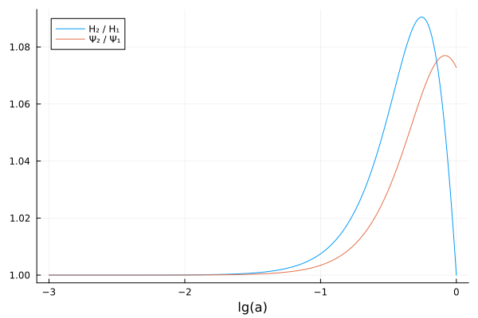

Creating extended models
This tutorial shows how to create extended (beyond-ΛCDM) models. As a simple example, we replace the cosmological constant with equation of state $w(t) = -1$ by w₀wₐ dark energy with equation of state
\[w(t) = \frac{P(t)}{ρ(t)} = w_0 + w_a (1 - a(t)),\]
turning the ΛCDM model into the w₀wₐCDM model, as suggested by Chevallier, Polarski (2000) and Linder (2002).
SymBoltz represents each component of the Einstein-Boltzmann equations as a ModelingToolkit.ODESystem. These are effectively incomplete "chunks" of logically related parameters, variables, equations and initial conditions that are composed together into a complete cosmological model. A cosmological model can be modified by adding or replacing components.
1. Create the reference model
First, we create the reference model that is to be extended. We will modify the standard ΛCDM model:
using SymBoltz
M1 = ΛCDM(K = nothing) # flat\[ \begin{align*} \mathtt{G.\rho}\left( t \right) &= \mathtt{h.\rho}\left( t \right) + \mathtt{c.\rho}\left( t \right) + \mathtt{b.\rho}\left( t \right) + \mathtt{\gamma.\rho}\left( t \right) + \mathtt{\Lambda.\rho}\left( t \right) + \mathtt{\nu.\rho}\left( t \right) \\ \mathtt{G.P}\left( t \right) &= \mathtt{b.P}\left( t \right) + \mathtt{c.P}\left( t \right) + \mathtt{h.P}\left( t \right) + \mathtt{\gamma.P}\left( t \right) + \mathtt{\nu.P}\left( t \right) + \mathtt{\Lambda.P}\left( t \right) \\ \mathtt{b.rec.{\rho}b}\left( t \right) &= 1.5736 \cdot 10^{-25} h^{2} \mathtt{b.\rho}\left( t \right) \\ \mathtt{b.rec.T\gamma}\left( t \right) &= \mathtt{\gamma.T}\left( t \right) \\ \mathtt{f\nu}\left( t \right) &= \frac{\mathtt{h.\rho}\left( t \right) + \mathtt{\nu.\rho}\left( t \right)}{\mathtt{h.\rho}\left( t \right) + \mathtt{\gamma.\rho}\left( t \right) + \mathtt{\nu.\rho}\left( t \right)} \\ \mathtt{G.\delta\rho}\left( t \right) \epsilon &= \left( \mathtt{h.\rho}\left( t \right) \mathtt{h.\delta}\left( t \right) + \mathtt{c.\rho}\left( t \right) \mathtt{c.\delta}\left( t \right) + \mathtt{\gamma.\delta}\left( t \right) \mathtt{\gamma.\rho}\left( t \right) + \mathtt{\nu.\delta}\left( t \right) \mathtt{\nu.\rho}\left( t \right) + \mathtt{b.\rho}\left( t \right) \mathtt{b.\delta}\left( t \right) + \mathtt{\Lambda.\rho}\left( t \right) \mathtt{\Lambda.\delta}\left( t \right) \right) \epsilon \\ \mathtt{G.{\delta}P}\left( t \right) \epsilon &= \left( \mathtt{h.\rho}\left( t \right) \mathtt{h.\delta}\left( t \right) \mathtt{h.c_s^2}\left( t \right) + \mathtt{c.\rho}\left( t \right) \mathtt{c.c_s^2}\left( t \right) \mathtt{c.\delta}\left( t \right) + \mathtt{\gamma.\delta}\left( t \right) \mathtt{\gamma.c_s^2}\left( t \right) \mathtt{\gamma.\rho}\left( t \right) + \mathtt{\nu.c_s^2}\left( t \right) \mathtt{\nu.\delta}\left( t \right) \mathtt{\nu.\rho}\left( t \right) + \mathtt{\Lambda.c_s^2}\left( t \right) \mathtt{\Lambda.\rho}\left( t \right) \mathtt{\Lambda.\delta}\left( t \right) + \mathtt{b.c_s^2}\left( t \right) \mathtt{b.\rho}\left( t \right) \mathtt{b.\delta}\left( t \right) \right) \epsilon \\ \mathtt{G.\Pi}\left( t \right) \epsilon &= \left( \left( \mathtt{h.\rho}\left( t \right) + \mathtt{h.P}\left( t \right) \right) \mathtt{h.\sigma}\left( t \right) + \left( \mathtt{b.P}\left( t \right) + \mathtt{b.\rho}\left( t \right) \right) \mathtt{b.\sigma}\left( t \right) + \left( \mathtt{c.\rho}\left( t \right) + \mathtt{c.P}\left( t \right) \right) \mathtt{c.\sigma}\left( t \right) + \left( \mathtt{\gamma.\rho}\left( t \right) + \mathtt{\gamma.P}\left( t \right) \right) \mathtt{\gamma.\sigma}\left( t \right) + \left( \mathtt{\Lambda.\rho}\left( t \right) + \mathtt{\Lambda.P}\left( t \right) \right) \mathtt{\Lambda.\sigma}\left( t \right) + \left( \mathtt{\nu.\rho}\left( t \right) + \mathtt{\nu.P}\left( t \right) \right) \mathtt{\nu.\sigma}\left( t \right) \right) \epsilon \\ \mathtt{b.{\theta}interaction}\left( t \right) \epsilon &= \frac{ - 4 \left( \mathtt{\gamma.\theta}\left( t \right) - \mathtt{b.\theta}\left( t \right) \right) \mathtt{\gamma.\rho}\left( t \right) \mathtt{b.rec.\dot{\tau}}\left( t \right) \epsilon}{3 \mathtt{b.\rho}\left( t \right)} \\ \mathtt{\gamma.\dot{\tau}}\left( t \right) \epsilon &= \mathtt{b.rec.\dot{\tau}}\left( t \right) \epsilon \\ \mathtt{\gamma.{\theta}b}\left( t \right) \epsilon &= \mathtt{b.\theta}\left( t \right) \epsilon \\ \mathtt{S\_SW}\left( t \right) \epsilon &= \left( \frac{1}{4} \mathtt{\gamma.\delta}\left( t \right) + \Psi\left( t \right) + \frac{1}{16} \mathtt{\gamma.\Pi}\left( t \right) \right) \mathtt{b.rec.v}\left( t \right) \epsilon \\ \mathtt{S\_ISW}\left( t \right) \epsilon &= \left( \frac{\mathrm{d} \Psi\left( t \right)}{\mathrm{d}t} + \frac{\mathrm{d} \Phi\left( t \right)}{\mathrm{d}t} \right) e^{ - \mathtt{b.rec.\tau}\left( t \right)} \epsilon \\ \mathtt{S\_Dop}\left( t \right) \epsilon &= \frac{\left( \mathtt{b.rec.v}\left( t \right) \frac{\mathrm{d} \mathtt{b.u}\left( t \right)}{\mathrm{d}t} + \frac{\mathrm{d} \mathtt{b.rec.v}\left( t \right)}{\mathrm{d}t} \mathtt{b.u}\left( t \right) \right) \epsilon}{k} \\ \mathtt{S\_pol}\left( t \right) \epsilon &= \frac{3 \left( \mathtt{\gamma.\Pi}\left( t \right) \frac{\mathrm{d} \mathtt{b.rec.v}\left( t \right)}{\mathrm{d}t} + \frac{\mathrm{d} \mathtt{\gamma.\Pi}\left( t \right)}{\mathrm{d}t} \mathtt{b.rec.v}\left( t \right) \right) \epsilon}{16 k} \\ \mathtt{S0}\left( t \right) \epsilon &= \left( \mathtt{S\_Dop}\left( t \right) + \mathtt{S\_ISW}\left( t \right) + \mathtt{S\_SW}\left( t \right) \right) \epsilon \\ \mathtt{S1}\left( t \right) \epsilon &= \mathtt{S\_pol}\left( t \right) \epsilon \\ z\left( t \right) &= -1 + \frac{1}{a\left( t \right)} \\ \mathscr{E}\left( t \right) &= \frac{\frac{\mathrm{d} a\left( t \right)}{\mathrm{d}t}}{a\left( t \right)} \\ E\left( t \right) &= \frac{\mathscr{E}\left( t \right)}{a\left( t \right)} \\ \mathscr{H}\left( t \right) &= 3.2408 \cdot 10^{-18} h \mathscr{E}\left( t \right) \\ H\left( t \right) &= 3.2408 \cdot 10^{-18} h E\left( t \right) \\ \mathtt{g_{1 1}}\left( t \right) &= \left( a\left( t \right) \right)^{2} \left( -1 - 2 \Psi\left( t \right) \epsilon \right) \\ \mathtt{g_{2 2}}\left( t \right) &= \left( a\left( t \right) \right)^{2} \left( 1 - 2 \Phi\left( t \right) \epsilon \right) \\ \frac{\mathrm{d} a\left( t \right)}{\mathrm{d}t} &= \sqrt{\frac{8}{3} \left( a\left( t \right) \right)^{4} \mathtt{G.\rho}\left( t \right) \pi} \\ \mathtt{G.\Delta}\left( t \right) &= \frac{ - \left( \frac{\mathrm{d} a\left( t \right)}{\mathrm{d}t} \right)^{2} \left( 1 + \frac{ - 3 \mathtt{G.P}\left( t \right)}{\mathtt{G.\rho}\left( t \right)} \right)}{2 a\left( t \right)} + \frac{\mathrm{d}}{\mathrm{d}t} \frac{\mathrm{d} a\left( t \right)}{\mathrm{d}t} \\ \frac{\mathrm{d} \Phi\left( t \right)}{\mathrm{d}t} \epsilon &= \left( \frac{ - k^{2} \Phi\left( t \right)}{3 \mathscr{E}\left( t \right)} + \frac{ - \frac{4}{3} \left( a\left( t \right) \right)^{2} \mathtt{G.\delta\rho}\left( t \right) \pi}{\mathscr{E}\left( t \right)} - \mathscr{E}\left( t \right) \Psi\left( t \right) \right) \epsilon \\ k^{2} \left( - \Psi\left( t \right) + \Phi\left( t \right) \right) \epsilon &= 12 \left( a\left( t \right) \right)^{2} \mathtt{G.\Pi}\left( t \right) \pi \epsilon \\ \frac{\mathrm{d} \mathtt{\gamma.F}\left( t \right)_{0}}{\mathrm{d}t} \epsilon &= \left( 4 \frac{\mathrm{d} \Phi\left( t \right)}{\mathrm{d}t} - k \mathtt{\gamma.F}\left( t \right)_{1} \right) \epsilon \\ \frac{\mathrm{d} \mathtt{\gamma.F}\left( t \right)_{1}}{\mathrm{d}t} \epsilon &= \left( \frac{ - \frac{4}{3} \left( \mathtt{\gamma.{\theta}b}\left( t \right) - \mathtt{\gamma.\theta}\left( t \right) \right) \mathtt{\gamma.\dot{\tau}}\left( t \right)}{k} + \frac{1}{3} k \left( 4 \Psi\left( t \right) + \mathtt{\gamma.F}\left( t \right)_{0} - 2 \mathtt{\gamma.F}\left( t \right)_{2} \right) \right) \epsilon \\ \frac{\mathrm{d} \mathtt{\gamma.F}\left( t \right)_{2}}{\mathrm{d}t} \epsilon &= \left( \frac{1}{5} k \left( 2 \mathtt{\gamma.F}\left( t \right)_{1} - 3 \mathtt{\gamma.F}\left( t \right)_{3} \right) + \frac{9}{10} \mathtt{\gamma.\dot{\tau}}\left( t \right) \mathtt{\gamma.F}\left( t \right)_{2} - \frac{1}{10} \mathtt{\gamma.\dot{\tau}}\left( t \right) \left( \mathtt{\gamma.G}\left( t \right)_{0} + \mathtt{\gamma.G}\left( t \right)_{2} \right) \right) \epsilon \\ \frac{\mathrm{d} \mathtt{\gamma.F}\left( t \right)_{3}}{\mathrm{d}t} \epsilon &= \left( \frac{1}{7} k \left( 3 \mathtt{\gamma.F}\left( t \right)_{2} - 4 \mathtt{\gamma.F}\left( t \right)_{4} \right) + \mathtt{\gamma.\dot{\tau}}\left( t \right) \mathtt{\gamma.F}\left( t \right)_{3} \right) \epsilon \\ \frac{\mathrm{d} \mathtt{\gamma.F}\left( t \right)_{4}}{\mathrm{d}t} \epsilon &= \left( \frac{1}{9} k \left( 4 \mathtt{\gamma.F}\left( t \right)_{3} - 5 \mathtt{\gamma.F}\left( t \right)_{5} \right) + \mathtt{\gamma.\dot{\tau}}\left( t \right) \mathtt{\gamma.F}\left( t \right)_{4} \right) \epsilon \\ \frac{\mathrm{d} \mathtt{\gamma.F}\left( t \right)_{5}}{\mathrm{d}t} \epsilon &= \left( \frac{1}{11} k \left( 5 \mathtt{\gamma.F}\left( t \right)_{4} - 6 \mathtt{\gamma.F}\left( t \right)_{6} \right) + \mathtt{\gamma.\dot{\tau}}\left( t \right) \mathtt{\gamma.F}\left( t \right)_{5} \right) \epsilon \\ \frac{\mathrm{d} \mathtt{\gamma.F}\left( t \right)_{6}}{\mathrm{d}t} \epsilon &= \left( k \mathtt{\gamma.F}\left( t \right)_{5} - 7 \mathscr{E}\left( t \right) \mathtt{\gamma.F}\left( t \right)_{6} + \mathtt{\gamma.\dot{\tau}}\left( t \right) \mathtt{\gamma.F}\left( t \right)_{6} \right) \epsilon \\ \mathtt{\gamma.\delta}\left( t \right) \epsilon &= \mathtt{\gamma.F}\left( t \right)_{0} \epsilon \\ \mathtt{\gamma.\theta}\left( t \right) \epsilon &= \frac{3}{4} k \mathtt{\gamma.F}\left( t \right)_{1} \epsilon \\ \mathtt{\gamma.\sigma}\left( t \right) \epsilon &= \frac{1}{2} \mathtt{\gamma.F}\left( t \right)_{2} \epsilon \\ \mathtt{\gamma.\Pi}\left( t \right) \epsilon &= \left( \mathtt{\gamma.F}\left( t \right)_{2} + \mathtt{\gamma.G}\left( t \right)_{0} + \mathtt{\gamma.G}\left( t \right)_{2} \right) \epsilon \\ \mathtt{\gamma.\dot{\Pi}}\left( t \right) \epsilon &= \frac{\mathrm{d} \mathtt{\gamma.\Pi}\left( t \right)}{\mathrm{d}t} \epsilon \\ \mathtt{\gamma.c_s^2}\left( t \right) \epsilon &= \frac{1}{3} \epsilon \\ \mathtt{\gamma.\Theta}\left( t \right)_{0} \epsilon &= \frac{1}{4} \mathtt{\gamma.F}\left( t \right)_{0} \epsilon \\ \mathtt{\gamma.\Theta}\left( t \right)_{1} \epsilon &= \frac{1}{4} \mathtt{\gamma.F}\left( t \right)_{1} \epsilon \\ \mathtt{\gamma.\Theta}\left( t \right)_{2} \epsilon &= \frac{1}{4} \mathtt{\gamma.F}\left( t \right)_{2} \epsilon \\ \mathtt{\gamma.\Theta}\left( t \right)_{3} \epsilon &= \frac{1}{4} \mathtt{\gamma.F}\left( t \right)_{3} \epsilon \\ \mathtt{\gamma.\Theta}\left( t \right)_{4} \epsilon &= \frac{1}{4} \mathtt{\gamma.F}\left( t \right)_{4} \epsilon \\ \mathtt{\gamma.\Theta}\left( t \right)_{5} \epsilon &= \frac{1}{4} \mathtt{\gamma.F}\left( t \right)_{5} \epsilon \\ \mathtt{\gamma.\Theta}\left( t \right)_{6} \epsilon &= \frac{1}{4} \mathtt{\gamma.F}\left( t \right)_{6} \epsilon \\ \frac{\mathrm{d} \mathtt{\gamma.G}\left( t \right)_{0}}{\mathrm{d}t} \epsilon &= \left( - k \mathtt{\gamma.G}\left( t \right)_{1} + \left( - \frac{1}{2} \mathtt{\gamma.\Pi}\left( t \right) + \mathtt{\gamma.G}\left( t \right)_{0} \right) \mathtt{\gamma.\dot{\tau}}\left( t \right) \right) \epsilon \\ \frac{\mathrm{d} \mathtt{\gamma.G}\left( t \right)_{1}}{\mathrm{d}t} \epsilon &= \left( \frac{1}{3} k \left( \mathtt{\gamma.G}\left( t \right)_{0} - 2 \mathtt{\gamma.G}\left( t \right)_{2} \right) + \mathtt{\gamma.\dot{\tau}}\left( t \right) \mathtt{\gamma.G}\left( t \right)_{1} \right) \epsilon \\ \frac{\mathrm{d} \mathtt{\gamma.G}\left( t \right)_{2}}{\mathrm{d}t} \epsilon &= \left( \frac{1}{5} k \left( 2 \mathtt{\gamma.G}\left( t \right)_{1} - 3 \mathtt{\gamma.G}\left( t \right)_{3} \right) + \left( - \frac{1}{10} \mathtt{\gamma.\Pi}\left( t \right) + \mathtt{\gamma.G}\left( t \right)_{2} \right) \mathtt{\gamma.\dot{\tau}}\left( t \right) \right) \epsilon \\ \frac{\mathrm{d} \mathtt{\gamma.G}\left( t \right)_{3}}{\mathrm{d}t} \epsilon &= \left( \frac{1}{7} k \left( 3 \mathtt{\gamma.G}\left( t \right)_{2} - 4 \mathtt{\gamma.G}\left( t \right)_{4} \right) + \mathtt{\gamma.\dot{\tau}}\left( t \right) \mathtt{\gamma.G}\left( t \right)_{3} \right) \epsilon \\ \frac{\mathrm{d} \mathtt{\gamma.G}\left( t \right)_{4}}{\mathrm{d}t} \epsilon &= \left( \frac{1}{9} k \left( 4 \mathtt{\gamma.G}\left( t \right)_{3} - 5 \mathtt{\gamma.G}\left( t \right)_{5} \right) + \mathtt{\gamma.\dot{\tau}}\left( t \right) \mathtt{\gamma.G}\left( t \right)_{4} \right) \epsilon \\ \frac{\mathrm{d} \mathtt{\gamma.G}\left( t \right)_{5}}{\mathrm{d}t} \epsilon &= \left( \frac{1}{11} k \left( 5 \mathtt{\gamma.G}\left( t \right)_{4} - 6 \mathtt{\gamma.G}\left( t \right)_{6} \right) + \mathtt{\gamma.\dot{\tau}}\left( t \right) \mathtt{\gamma.G}\left( t \right)_{5} \right) \epsilon \\ \frac{\mathrm{d} \mathtt{\gamma.G}\left( t \right)_{6}}{\mathrm{d}t} \epsilon &= \left( k \mathtt{\gamma.G}\left( t \right)_{5} - 7 \mathscr{E}\left( t \right) \mathtt{\gamma.G}\left( t \right)_{6} + \mathtt{\gamma.\dot{\tau}}\left( t \right) \mathtt{\gamma.G}\left( t \right)_{6} \right) \epsilon \\ \mathtt{\gamma.T}\left( t \right) &= \frac{\mathtt{\gamma.T{_0}}}{a\left( t \right)} \\ \mathtt{\gamma.w}\left( t \right) &= \frac{1}{3} \\ \mathtt{\gamma.P}\left( t \right) &= \mathtt{\gamma.\rho}\left( t \right) \mathtt{\gamma.w}\left( t \right) \\ \mathtt{\gamma.\rho}\left( t \right) &= 0.11937 \left( a\left( t \right) \right)^{ - 3 \left( 1 + \mathtt{\gamma.w}\left( t \right) \right)} \mathtt{\gamma.\Omega_0} \\ \mathtt{\gamma.\Omega}\left( t \right) &= 8.3776 \mathtt{\gamma.\rho}\left( t \right) \\ \frac{\mathrm{d} \mathtt{\nu.F}\left( t \right)_{0}}{\mathrm{d}t} \epsilon &= \left( 4 \frac{\mathrm{d} \Phi\left( t \right)}{\mathrm{d}t} - k \mathtt{\nu.F}\left( t \right)_{1} \right) \epsilon \\ \frac{\mathrm{d} \mathtt{\nu.F}\left( t \right)_{1}}{\mathrm{d}t} \epsilon &= \frac{1}{3} k \left( 4 \Psi\left( t \right) + \mathtt{\nu.F}\left( t \right)_{0} - 2 \mathtt{\nu.F}\left( t \right)_{2} \right) \epsilon \\ \frac{\mathrm{d} \mathtt{\nu.F}\left( t \right)_{2}}{\mathrm{d}t} \epsilon &= \frac{1}{5} k \left( 2 \mathtt{\nu.F}\left( t \right)_{1} - 3 \mathtt{\nu.F}\left( t \right)_{3} \right) \epsilon \\ \frac{\mathrm{d} \mathtt{\nu.F}\left( t \right)_{3}}{\mathrm{d}t} \epsilon &= \frac{1}{7} k \left( 3 \mathtt{\nu.F}\left( t \right)_{2} - 4 \mathtt{\nu.F}\left( t \right)_{4} \right) \epsilon \\ \frac{\mathrm{d} \mathtt{\nu.F}\left( t \right)_{4}}{\mathrm{d}t} \epsilon &= \frac{1}{9} k \left( 4 \mathtt{\nu.F}\left( t \right)_{3} - 5 \mathtt{\nu.F}\left( t \right)_{5} \right) \epsilon \\ \frac{\mathrm{d} \mathtt{\nu.F}\left( t \right)_{5}}{\mathrm{d}t} \epsilon &= \frac{1}{11} k \left( 5 \mathtt{\nu.F}\left( t \right)_{4} - 6 \mathtt{\nu.F}\left( t \right)_{6} \right) \epsilon \\ \frac{\mathrm{d} \mathtt{\nu.F}\left( t \right)_{6}}{\mathrm{d}t} \epsilon &= \left( k \mathtt{\nu.F}\left( t \right)_{5} - 7 \mathscr{E}\left( t \right) \mathtt{\nu.F}\left( t \right)_{6} \right) \epsilon \\ \mathtt{\nu.\delta}\left( t \right) \epsilon &= \mathtt{\nu.F}\left( t \right)_{0} \epsilon \\ \mathtt{\nu.\theta}\left( t \right) \epsilon &= \frac{3}{4} k \mathtt{\nu.F}\left( t \right)_{1} \epsilon \\ \mathtt{\nu.\sigma}\left( t \right) \epsilon &= \frac{1}{2} \mathtt{\nu.F}\left( t \right)_{2} \epsilon \\ \mathtt{\nu.c_s^2}\left( t \right) \epsilon &= \frac{1}{3} \epsilon \\ \mathtt{\nu.T}\left( t \right) &= \frac{\mathtt{\nu.T{_0}}}{a\left( t \right)} \\ \mathtt{\nu.w}\left( t \right) &= \frac{1}{3} \\ \mathtt{\nu.P}\left( t \right) &= \mathtt{\nu.w}\left( t \right) \mathtt{\nu.\rho}\left( t \right) \\ \mathtt{\nu.\rho}\left( t \right) &= 0.11937 \left( a\left( t \right) \right)^{ - 3 \left( 1 + \mathtt{\nu.w}\left( t \right) \right)} \mathtt{\nu.\Omega_0} \\ \mathtt{\nu.\Omega}\left( t \right) &= 8.3776 \mathtt{\nu.\rho}\left( t \right) \\ \mathtt{c.c_s^2}\left( t \right) \epsilon &= 0 \\ \mathtt{c.w}\left( t \right) &= 0 \\ \mathtt{c.P}\left( t \right) &= \mathtt{c.\rho}\left( t \right) \mathtt{c.w}\left( t \right) \\ \mathtt{c.\rho}\left( t \right) &= \frac{3 \left( a\left( t \right) \right)^{ - 3 \left( 1 + \mathtt{c.w}\left( t \right) \right)} \mathtt{c.\Omega_0}}{8 \pi} \\ \mathtt{c.\Omega}\left( t \right) &= \frac{8}{3} \mathtt{c.\rho}\left( t \right) \pi \\ \frac{\mathrm{d} \mathtt{c.\delta}\left( t \right)}{\mathrm{d}t} \epsilon &= \left( \left( -1 - \mathtt{c.w}\left( t \right) \right) \left( \mathtt{c.\theta}\left( t \right) - 3 \frac{\mathrm{d} \Phi\left( t \right)}{\mathrm{d}t} \right) - 3 \left( - \mathtt{c.w}\left( t \right) + \mathtt{c.c_s^2}\left( t \right) \right) \mathscr{E}\left( t \right) \mathtt{c.\delta}\left( t \right) \right) \epsilon \\ \frac{\mathrm{d} \mathtt{c.\theta}\left( t \right)}{\mathrm{d}t} \epsilon &= \left( \frac{k^{2} \mathtt{c.c_s^2}\left( t \right) \mathtt{c.\delta}\left( t \right)}{1 + \mathtt{c.w}\left( t \right)} + \mathtt{c.{\theta}interaction}\left( t \right) + k^{2} \Psi\left( t \right) - k^{2} \mathtt{c.\sigma}\left( t \right) - \left( 1 - 3 \mathtt{c.w}\left( t \right) \right) \mathscr{E}\left( t \right) \mathtt{c.\theta}\left( t \right) \right) \epsilon \\ \mathtt{c.u}\left( t \right) \epsilon &= \frac{\mathtt{c.\theta}\left( t \right) \epsilon}{k} \\ \mathtt{c.\dot{u}}\left( t \right) \epsilon &= \frac{\mathrm{d} \mathtt{c.u}\left( t \right)}{\mathrm{d}t} \epsilon \\ \mathtt{c.\Delta}\left( t \right) \epsilon &= \left( \mathtt{c.\delta}\left( t \right) + \frac{3 \left( 1 + \mathtt{c.w}\left( t \right) \right) \mathscr{E}\left( t \right)}{\mathtt{c.\theta}\left( t \right)} \right) \epsilon \\ \mathtt{c.\sigma}\left( t \right) \epsilon &= 0 \\ \mathtt{c.{\theta}interaction}\left( t \right) \epsilon &= 0 \\ \mathtt{b.c_s^2}\left( t \right) \epsilon &= \mathtt{b.rec.c_s^2}\left( t \right) \epsilon \\ \mathtt{b.w}\left( t \right) &= 0 \\ \mathtt{b.P}\left( t \right) &= \mathtt{b.\rho}\left( t \right) \mathtt{b.w}\left( t \right) \\ \mathtt{b.\rho}\left( t \right) &= \frac{3 \left( a\left( t \right) \right)^{ - 3 \left( 1 + \mathtt{b.w}\left( t \right) \right)} \mathtt{b.\Omega_0}}{8 \pi} \\ \mathtt{b.\Omega}\left( t \right) &= \frac{8}{3} \mathtt{b.\rho}\left( t \right) \pi \\ \frac{\mathrm{d} \mathtt{b.\delta}\left( t \right)}{\mathrm{d}t} \epsilon &= \left( \left( -1 - \mathtt{b.w}\left( t \right) \right) \left( \mathtt{b.\theta}\left( t \right) - 3 \frac{\mathrm{d} \Phi\left( t \right)}{\mathrm{d}t} \right) - 3 \mathscr{E}\left( t \right) \left( \mathtt{b.c_s^2}\left( t \right) - \mathtt{b.w}\left( t \right) \right) \mathtt{b.\delta}\left( t \right) \right) \epsilon \\ \frac{\mathrm{d} \mathtt{b.\theta}\left( t \right)}{\mathrm{d}t} \epsilon &= \left( \frac{k^{2} \mathtt{b.c_s^2}\left( t \right) \mathtt{b.\delta}\left( t \right)}{1 + \mathtt{b.w}\left( t \right)} + \mathtt{b.{\theta}interaction}\left( t \right) + k^{2} \Psi\left( t \right) - k^{2} \mathtt{b.\sigma}\left( t \right) - \mathscr{E}\left( t \right) \left( 1 - 3 \mathtt{b.w}\left( t \right) \right) \mathtt{b.\theta}\left( t \right) \right) \epsilon \\ \mathtt{b.u}\left( t \right) \epsilon &= \frac{\mathtt{b.\theta}\left( t \right) \epsilon}{k} \\ \mathtt{b.\dot{u}}\left( t \right) \epsilon &= \frac{\mathrm{d} \mathtt{b.u}\left( t \right)}{\mathrm{d}t} \epsilon \\ \mathtt{b.\Delta}\left( t \right) \epsilon &= \left( \mathtt{b.\delta}\left( t \right) + \frac{3 \mathscr{E}\left( t \right) \left( 1 + \mathtt{b.w}\left( t \right) \right)}{\mathtt{b.\theta}\left( t \right)} \right) \epsilon \\ \mathtt{b.\sigma}\left( t \right) \epsilon &= 0 \\ \mathtt{b.rec.nH}\left( t \right) &= 5.9743 \cdot 10^{26} \left( 1 - \mathtt{b.rec.Yp} \right) \mathtt{b.rec.{\rho}b}\left( t \right) \\ \mathtt{b.rec.nHe}\left( t \right) &= \mathtt{b.rec.fHe} \mathtt{b.rec.nH}\left( t \right) \\ \mathtt{b.rec.DTb}\left( t \right) &= \frac{ - 0.00015165 \left( \mathtt{b.rec.T\gamma}\left( t \right) \right)^{4} a\left( t \right) \mathtt{b.rec.Xe}\left( t \right) \mathtt{b.rec.{\Delta}T}\left( t \right)}{\left( 1 + \mathtt{b.rec.fHe} + \mathtt{b.rec.Xe}\left( t \right) \right) h} - 2 \mathscr{E}\left( t \right) \mathtt{b.rec.Tb}\left( t \right) \\ \mathtt{b.rec.DT\gamma}\left( t \right) &= \frac{\mathrm{d} \mathtt{b.rec.T\gamma}\left( t \right)}{\mathrm{d}t} \\ \frac{\mathrm{d} \mathtt{b.rec.{\Delta}T}\left( t \right)}{\mathrm{d}t} &= - \mathtt{b.rec.DT\gamma}\left( t \right) + \mathtt{b.rec.DTb}\left( t \right) \\ \mathtt{b.rec.Tb}\left( t \right) &= \mathtt{b.rec.T\gamma}\left( t \right) + \mathtt{b.rec.{\Delta}T}\left( t \right) \\ \mathtt{b.rec.{\beta}b}\left( t \right) &= \frac{1}{1.3806 \cdot 10^{-23} \mathtt{b.rec.Tb}\left( t \right)} \\ \mathtt{b.rec.{\lambda}e}\left( t \right) &= \frac{6.6261 \cdot 10^{-34}}{\sqrt{\frac{5.7236 \cdot 10^{-30}}{\mathtt{b.rec.{\beta}b}\left( t \right)}}} \\ \mathtt{b.rec.\mu}\left( t \right) &= \frac{1.6738 \cdot 10^{-27}}{1 - 0.74816 \mathtt{b.rec.Yp} + \left( 1 - \mathtt{b.rec.Yp} \right) \mathtt{b.rec.Xe}\left( t \right)} \\ \mathtt{b.rec.c_s^2}\left( t \right) &= \frac{1.3806 \cdot 10^{-23} \left( \frac{ - \frac{\mathrm{d} \mathtt{b.rec.Tb}\left( t \right)}{\mathrm{d}t}}{3 \mathscr{E}\left( t \right)} + \mathtt{b.rec.Tb}\left( t \right) \right)}{8.9876 \cdot 10^{16} \mathtt{b.rec.\mu}\left( t \right)} \\ \mathtt{b.rec.{\alpha}H}\left( t \right) &= \frac{4.9123 \cdot 10^{-19}}{0.0034166 \left( \mathtt{b.rec.Tb}\left( t \right) \right)^{0.6166} \left( 1 + 0.0050847 \left( \mathtt{b.rec.Tb}\left( t \right) \right)^{0.53} \right)} \\ \mathtt{b.rec.{\beta}H}\left( t \right) &= \frac{\mathtt{b.rec.{\alpha}H}\left( t \right) e^{ - 5.4468 \cdot 10^{-19} \mathtt{b.rec.{\beta}b}\left( t \right)}}{\left( \mathtt{b.rec.{\lambda}e}\left( t \right) \right)^{3}} \\ \mathtt{b.rec.KH0}\left( t \right) &= \frac{1.7966 \cdot 10^{-21}}{25.133 H\left( t \right)} \\ \mathtt{b.rec.KH1}\left( t \right) &= \left( - 0.14 e^{ - 30.864 \left( 7.28 + \log\left( a\left( t \right) \right) \right)^{2}} + 0.079 e^{ - 9.1827 \left( 6.73 + \log\left( a\left( t \right) \right) \right)^{2}} \right) \mathtt{b.rec.KH0}\left( t \right) \\ \mathtt{b.rec.KH}\left( t \right) &= \mathtt{b.rec.KH1}\left( t \right) + \mathtt{b.rec.KH0}\left( t \right) \\ \mathtt{b.rec.CH}\left( t \right) &= \frac{1 + 8.2246 \mathtt{b.rec.nH}\left( t \right) \mathtt{b.rec.KH}\left( t \right) \left( 1 - \mathtt{b.rec.XH^+}\left( t \right) \right)}{1 + \mathtt{b.rec.nH}\left( t \right) \left( 8.2246 + \mathtt{b.rec.{\beta}H}\left( t \right) \right) \mathtt{b.rec.KH}\left( t \right) \left( 1 - \mathtt{b.rec.XH^+}\left( t \right) \right)} \\ \frac{\mathrm{d} \mathtt{b.rec.XH^+}\left( t \right)}{\mathrm{d}t} &= \frac{\left( - \mathtt{b.rec.ne}\left( t \right) \mathtt{b.rec.{\alpha}H}\left( t \right) \mathtt{b.rec.XH^+}\left( t \right) + \mathtt{b.rec.{\beta}H}\left( t \right) \left( 1 - \mathtt{b.rec.XH^+}\left( t \right) \right) e^{ - 1.634 \cdot 10^{-18} \mathtt{b.rec.{\beta}b}\left( t \right)} \right) \mathtt{b.rec.CH}\left( t \right) a\left( t \right)}{3.2408 \cdot 10^{-18} h} \\ \mathtt{b.rec.{\alpha}He}\left( t \right) &= \frac{1.803 \cdot 10^{-17}}{\left( 1 + \sqrt{0.33333 \mathtt{b.rec.Tb}\left( t \right)} \right)^{0.289} \left( 1 + \sqrt{7.6913 \cdot 10^{-6} \mathtt{b.rec.Tb}\left( t \right)} \right)^{1.711} \sqrt{0.33333 \mathtt{b.rec.Tb}\left( t \right)}} \\ \mathtt{b.rec.{\beta}He}\left( t \right) &= \frac{4 \mathtt{b.rec.{\alpha}He}\left( t \right) e^{ - 6.3633 \cdot 10^{-19} \mathtt{b.rec.{\beta}b}\left( t \right)}}{\left( \mathtt{b.rec.{\lambda}e}\left( t \right) \right)^{3}} \\ \mathtt{b.rec.KHe0^{- 1}}\left( t \right) &= 1.2597 \cdot 10^{23} H\left( t \right) \\ \mathtt{b.rec.KHe1^{- 1}}\left( t \right) &= - \mathtt{b.rec.KHe0^{- 1}}\left( t \right) e^{\frac{ - 5.3949 \cdot 10^{9} \mathtt{b.rec.nHe}\left( t \right) \left( 1 - \mathtt{b.rec.XHe^+}\left( t \right) \right)}{\mathtt{b.rec.KHe0^{- 1}}\left( t \right)}} \\ \mathtt{b.rec.{\gamma}2Ps}\left( t \right) &= \left|\frac{4.8487 \cdot 10^{26} \mathtt{b.rec.fHe} \left( 1 - \mathtt{b.rec.XHe^+}\left( t \right) \right)}{4.8748 \cdot 10^{26} \sqrt{\frac{6.2832}{5.9736 \cdot 10^{-10} \mathtt{b.rec.{\beta}b}\left( t \right)}} \left( 1 - \mathtt{b.rec.XH^+}\left( t \right) \right)}\right| \\ \mathtt{b.rec.KHe2^{- 1}}\left( t \right) &= \frac{5.3949 \cdot 10^{9} \mathtt{b.rec.nHe}\left( t \right) \left( 1 - \mathtt{b.rec.XHe^+}\left( t \right) \right)}{1 + 0.36 \left( \mathtt{b.rec.{\gamma}2Ps}\left( t \right) \right)^{0.86}} \\ \mathtt{b.rec.KHe}\left( t \right) &= \frac{1}{\mathtt{b.rec.KHe0^{- 1}}\left( t \right) + \mathtt{b.rec.KHe2^{- 1}}\left( t \right) + \mathtt{b.rec.KHe1^{- 1}}\left( t \right)} \\ \mathtt{b.rec.CHe}\left( t \right) &= \frac{e^{ - 9.6491 \cdot 10^{-20} \mathtt{b.rec.{\beta}b}\left( t \right)} + 51.3 \mathtt{b.rec.nHe}\left( t \right) \left( 1 - \mathtt{b.rec.XHe^+}\left( t \right) \right) \mathtt{b.rec.KHe}\left( t \right)}{e^{ - 9.6491 \cdot 10^{-20} \mathtt{b.rec.{\beta}b}\left( t \right)} + \mathtt{b.rec.nHe}\left( t \right) \left( 1 - \mathtt{b.rec.XHe^+}\left( t \right) \right) \mathtt{b.rec.KHe}\left( t \right) \left( 51.3 + \mathtt{b.rec.{\beta}He}\left( t \right) \right)} \\ \mathtt{b.rec.DXHe^+\_singlet}\left( t \right) &= \frac{\left( - \mathtt{b.rec.{\alpha}He}\left( t \right) \mathtt{b.rec.ne}\left( t \right) \mathtt{b.rec.XHe^+}\left( t \right) - \left( -1 + \mathtt{b.rec.XHe^+}\left( t \right) \right) \mathtt{b.rec.{\beta}He}\left( t \right) e^{ - 3.303 \cdot 10^{-18} \mathtt{b.rec.{\beta}b}\left( t \right)} \right) \mathtt{b.rec.CHe}\left( t \right) a\left( t \right)}{3.2408 \cdot 10^{-18} h} \\ \mathtt{b.rec.{\alpha}He3}\left( t \right) &= \frac{4.9431 \cdot 10^{-17}}{\left( 1 + \sqrt{0.33333 \mathtt{b.rec.Tb}\left( t \right)} \right)^{0.239} \left( 1 + \sqrt{7.6913 \cdot 10^{-6} \mathtt{b.rec.Tb}\left( t \right)} \right)^{1.761} \sqrt{0.33333 \mathtt{b.rec.Tb}\left( t \right)}} \\ \mathtt{b.rec.{\beta}He3}\left( t \right) &= \frac{1.3333 e^{ - 7.6388 \cdot 10^{-19} \mathtt{b.rec.{\beta}b}\left( t \right)} \mathtt{b.rec.{\alpha}He3}\left( t \right)}{\left( \mathtt{b.rec.{\lambda}e}\left( t \right) \right)^{3}} \\ \mathtt{b.rec.{\tau}He3}\left( t \right) &= \frac{1.102 \cdot 10^{-19} \mathtt{b.rec.nHe}\left( t \right) \left( 1 - \mathtt{b.rec.XHe^+}\left( t \right) \right)}{25.133 H\left( t \right)} \\ \mathtt{b.rec.pHe3}\left( t \right) &= \frac{1 - e^{ - \mathtt{b.rec.{\tau}He3}\left( t \right)}}{\mathtt{b.rec.{\tau}He3}\left( t \right)} \\ \mathtt{b.rec.{\gamma}2Pt}\left( t \right) &= \left|\frac{1.8633 \cdot 10^{-12} \mathtt{b.rec.fHe} \left( 1 - \mathtt{b.rec.XHe^+}\left( t \right) \right)}{1.8917 \cdot 10^{-5} \sqrt{\frac{6.2832}{5.9736 \cdot 10^{-10} \mathtt{b.rec.{\beta}b}\left( t \right)}} \left( 1 - \mathtt{b.rec.XH^+}\left( t \right) \right)}\right| \\ \mathtt{b.rec.CHe3}\left( t \right) &= \frac{1 \cdot 10^{-10} + 177.58 \left( \mathtt{b.rec.pHe3}\left( t \right) + \frac{\frac{1}{3}}{1 + 0.66 \left( \mathtt{b.rec.{\gamma}2Pt}\left( t \right) \right)^{0.9}} \right) e^{ - 1.8337 \cdot 10^{-19} \mathtt{b.rec.{\beta}b}\left( t \right)}}{1 \cdot 10^{-10} + \mathtt{b.rec.{\beta}He3}\left( t \right) + 177.58 \left( \mathtt{b.rec.pHe3}\left( t \right) + \frac{\frac{1}{3}}{1 + 0.66 \left( \mathtt{b.rec.{\gamma}2Pt}\left( t \right) \right)^{0.9}} \right) e^{ - 1.8337 \cdot 10^{-19} \mathtt{b.rec.{\beta}b}\left( t \right)}} \\ \mathtt{b.rec.DXHe^+\_triplet}\left( t \right) &= \frac{\left( - \mathtt{b.rec.ne}\left( t \right) \mathtt{b.rec.XHe^+}\left( t \right) \mathtt{b.rec.{\alpha}He3}\left( t \right) + 3 \mathtt{b.rec.{\beta}He3}\left( t \right) \left( 1 - \mathtt{b.rec.XHe^+}\left( t \right) \right) e^{ - 3.1755 \cdot 10^{-18} \mathtt{b.rec.{\beta}b}\left( t \right)} \right) a\left( t \right) \mathtt{b.rec.CHe3}\left( t \right)}{3.2408 \cdot 10^{-18} h} \\ \frac{\mathrm{d} \mathtt{b.rec.XHe^+}\left( t \right)}{\mathrm{d}t} &= \mathtt{b.rec.DXHe^+\_triplet}\left( t \right) + \mathtt{b.rec.DXHe^+\_singlet}\left( t \right) \\ \mathtt{b.rec.RHe^+}\left( t \right) &= \frac{e^{ - 8.7187 \cdot 10^{-18} \mathtt{b.rec.{\beta}b}\left( t \right)}}{\left( \mathtt{b.rec.{\lambda}e}\left( t \right) \right)^{3} \mathtt{b.rec.nH}\left( t \right)} \\ \mathtt{b.rec.XHe^{+ +}}\left( t \right) &= \frac{2 \mathtt{b.rec.fHe} \mathtt{b.rec.RHe^+}\left( t \right)}{\left( 1 + \mathtt{b.rec.fHe} + \mathtt{b.rec.RHe^+}\left( t \right) \right) \left( 1 + \sqrt{1 + \frac{4 \mathtt{b.rec.fHe} \mathtt{b.rec.RHe^+}\left( t \right)}{\left( 1 + \mathtt{b.rec.fHe} + \mathtt{b.rec.RHe^+}\left( t \right) \right)^{2}}} \right)} \\ \mathtt{b.rec.re1Xe}\left( t \right) &= 0.5 \left( 1 + \mathtt{b.rec.fHe} + \left( 1 + \mathtt{b.rec.fHe} \right) \tanh\left( \frac{\left( 1 + \mathtt{b.rec.re1z} \right)^{1.5} - \left( 1 + z\left( t \right) \right)^{1.5}}{0.75 \left( 1 + \mathtt{b.rec.re1z} \right)^{0.5}} \right) \right) \\ \mathtt{b.rec.re2Xe}\left( t \right) &= 0.5 \left( \mathtt{b.rec.fHe} + \mathtt{b.rec.fHe} \tanh\left( \frac{\left( 1 + \mathtt{b.rec.re2z} \right)^{1.5} - \left( 1 + z\left( t \right) \right)^{1.5}}{0.75 \left( 1 + \mathtt{b.rec.re2z} \right)^{0.5}} \right) \right) \\ \mathtt{b.rec.Xe}\left( t \right) &= \mathtt{b.rec.re1Xe}\left( t \right) + \mathtt{b.rec.re2Xe}\left( t \right) + \mathtt{b.rec.XHe^{+ +}}\left( t \right) + \mathtt{b.rec.XH^+}\left( t \right) + \mathtt{b.rec.fHe} \mathtt{b.rec.XHe^+}\left( t \right) \\ \mathtt{b.rec.ne}\left( t \right) &= \mathtt{b.rec.nH}\left( t \right) \mathtt{b.rec.Xe}\left( t \right) \\ \frac{\mathrm{d} \mathtt{b.rec.\tau}\left( t \right)}{\mathrm{d}t} &= \frac{ - 1.9944 \cdot 10^{-20} \mathtt{b.rec.ne}\left( t \right) a\left( t \right)}{3.2408 \cdot 10^{-18} h} \\ \mathtt{b.rec.\dot{\tau}}\left( t \right) &= \frac{\mathrm{d} \mathtt{b.rec.\tau}\left( t \right)}{\mathrm{d}t} \\ \mathtt{b.rec.v}\left( t \right) &= - \frac{\mathrm{d} \mathtt{b.rec.\tau}\left( t \right)}{\mathrm{d}t} e^{ - \mathtt{b.rec.\tau}\left( t \right)} \\ \mathtt{b.rec.\dot{v}}\left( t \right) &= \frac{\mathrm{d} \mathtt{b.rec.v}\left( t \right)}{\mathrm{d}t} \\ \mathtt{b.rec.\textnormal{\"{v}}}\left( t \right) &= 0 \\ \mathtt{h.T}\left( t \right) &= \frac{\mathtt{h.T{_0}}}{a\left( t \right)} \\ \mathtt{h.y}\left( t \right) &= \frac{8.9876 \cdot 10^{16} \mathtt{h.m}}{1.3806 \cdot 10^{-23} \mathtt{h.T}\left( t \right)} \\ \mathtt{h.In}\left( t \right) &= \mathtt{h.W}_{1} + \mathtt{h.W}_{2} + \mathtt{h.W}_{3} + \mathtt{h.W}_{4} + \mathtt{h.W}_{5} \\ \mathtt{h.I\rho}\left( t \right) &= \mathtt{h.E}\left( t \right)_{1} \mathtt{h.W}_{1} + \mathtt{h.E}\left( t \right)_{2} \mathtt{h.W}_{2} + \mathtt{h.E}\left( t \right)_{3} \mathtt{h.W}_{3} + \mathtt{h.E}\left( t \right)_{4} \mathtt{h.W}_{4} + \mathtt{h.E}\left( t \right)_{5} \mathtt{h.W}_{5} \\ \mathtt{h.IP}\left( t \right) &= \frac{\left( \mathtt{h.x}_{3} \right)^{2} \mathtt{h.W}_{3}}{\mathtt{h.E}\left( t \right)_{3}} + \frac{\left( \mathtt{h.x}_{1} \right)^{2} \mathtt{h.W}_{1}}{\mathtt{h.E}\left( t \right)_{1}} + \frac{\left( \mathtt{h.x}_{2} \right)^{2} \mathtt{h.W}_{2}}{\mathtt{h.E}\left( t \right)_{2}} + \frac{\left( \mathtt{h.x}_{4} \right)^{2} \mathtt{h.W}_{4}}{\mathtt{h.E}\left( t \right)_{4}} + \frac{\left( \mathtt{h.x}_{5} \right)^{2} \mathtt{h.W}_{5}}{\mathtt{h.E}\left( t \right)_{5}} \\ \mathtt{h.\rho}\left( t \right) &= \frac{1.165 \cdot 10^{-16} \left( \mathtt{h.T}\left( t \right) \right)^{4} \mathtt{h.I\rho}\left( t \right)}{1.4143 \cdot 10^{-8} h^{2}} \\ \mathtt{h.P}\left( t \right) &= \frac{3.8835 \cdot 10^{-17} \left( \mathtt{h.T}\left( t \right) \right)^{4} \mathtt{h.IP}\left( t \right)}{1.4143 \cdot 10^{-8} h^{2}} \\ \mathtt{h.w}\left( t \right) &= \frac{\mathtt{h.P}\left( t \right)}{\mathtt{h.\rho}\left( t \right)} \\ \mathtt{h.\Omega}\left( t \right) &= \frac{8}{3} \mathtt{h.\rho}\left( t \right) \pi \\ \mathtt{h.E}\left( t \right)_{1} &= \sqrt{\left( \mathtt{h.x}_{1} \right)^{2} + \left( \mathtt{h.y}\left( t \right) \right)^{2}} \\ \mathtt{h.E}\left( t \right)_{2} &= \sqrt{\left( \mathtt{h.x}_{2} \right)^{2} + \left( \mathtt{h.y}\left( t \right) \right)^{2}} \\ \mathtt{h.E}\left( t \right)_{3} &= \sqrt{\left( \mathtt{h.x}_{3} \right)^{2} + \left( \mathtt{h.y}\left( t \right) \right)^{2}} \\ \mathtt{h.E}\left( t \right)_{4} &= \sqrt{\left( \mathtt{h.x}_{4} \right)^{2} + \left( \mathtt{h.y}\left( t \right) \right)^{2}} \\ \mathtt{h.E}\left( t \right)_{5} &= \sqrt{\left( \mathtt{h.x}_{5} \right)^{2} + \left( \mathtt{h.y}\left( t \right) \right)^{2}} \\ \mathtt{h.I\delta\rho}\left( t \right) \epsilon &= \left( \mathtt{h.E}\left( t \right)_{1} \mathtt{h.W}_{1} \mathtt{h.\psi}\left( t \right)_{1,0} + \mathtt{h.E}\left( t \right)_{2} \mathtt{h.W}_{2} \mathtt{h.\psi}\left( t \right)_{2,0} + \mathtt{h.E}\left( t \right)_{3} \mathtt{h.W}_{3} \mathtt{h.\psi}\left( t \right)_{3,0} + \mathtt{h.E}\left( t \right)_{4} \mathtt{h.W}_{4} \mathtt{h.\psi}\left( t \right)_{4,0} + \mathtt{h.E}\left( t \right)_{5} \mathtt{h.W}_{5} \mathtt{h.\psi}\left( t \right)_{5,0} \right) \epsilon \\ \mathtt{h.\delta}\left( t \right) \epsilon &= \frac{\mathtt{h.I\delta\rho}\left( t \right) \epsilon}{\mathtt{h.I\rho}\left( t \right)} \\ \mathtt{h.u}\left( t \right) \epsilon &= \frac{\left( \mathtt{h.W}_{1} \mathtt{h.x}_{1} \mathtt{h.\psi}\left( t \right)_{1,1} + \mathtt{h.W}_{2} \mathtt{h.x}_{2} \mathtt{h.\psi}\left( t \right)_{2,1} + \mathtt{h.W}_{3} \mathtt{h.x}_{3} \mathtt{h.\psi}\left( t \right)_{3,1} + \mathtt{h.W}_{4} \mathtt{h.x}_{4} \mathtt{h.\psi}\left( t \right)_{4,1} + \mathtt{h.W}_{5} \mathtt{h.x}_{5} \mathtt{h.\psi}\left( t \right)_{5,1} \right) \epsilon}{\mathtt{h.I\rho}\left( t \right) + \frac{1}{3} \mathtt{h.IP}\left( t \right)} \\ \mathtt{h.\theta}\left( t \right) \epsilon &= k \mathtt{h.u}\left( t \right) \epsilon \\ \mathtt{h.\sigma}\left( t \right) \epsilon &= \frac{\frac{2}{3} \left( \frac{\left( \mathtt{h.x}_{4} \right)^{2} \mathtt{h.W}_{4} \mathtt{h.\psi}\left( t \right)_{4,2}}{\mathtt{h.E}\left( t \right)_{4}} + \frac{\left( \mathtt{h.x}_{2} \right)^{2} \mathtt{h.W}_{2} \mathtt{h.\psi}\left( t \right)_{2,2}}{\mathtt{h.E}\left( t \right)_{2}} + \frac{\left( \mathtt{h.x}_{3} \right)^{2} \mathtt{h.W}_{3} \mathtt{h.\psi}\left( t \right)_{3,2}}{\mathtt{h.E}\left( t \right)_{3}} + \frac{\left( \mathtt{h.x}_{1} \right)^{2} \mathtt{h.W}_{1} \mathtt{h.\psi}\left( t \right)_{1,2}}{\mathtt{h.E}\left( t \right)_{1}} + \frac{\left( \mathtt{h.x}_{5} \right)^{2} \mathtt{h.W}_{5} \mathtt{h.\psi}\left( t \right)_{5,2}}{\mathtt{h.E}\left( t \right)_{5}} \right) \epsilon}{\mathtt{h.I\rho}\left( t \right) + \frac{1}{3} \mathtt{h.IP}\left( t \right)} \\ \mathtt{h.c_s^2}\left( t \right) \epsilon &= \frac{\left( \frac{\left( \mathtt{h.x}_{4} \right)^{2} \mathtt{h.W}_{4} \mathtt{h.\psi}\left( t \right)_{4,0}}{\mathtt{h.E}\left( t \right)_{4}} + \frac{\left( \mathtt{h.x}_{1} \right)^{2} \mathtt{h.W}_{1} \mathtt{h.\psi}\left( t \right)_{1,0}}{\mathtt{h.E}\left( t \right)_{1}} + \frac{\left( \mathtt{h.x}_{3} \right)^{2} \mathtt{h.W}_{3} \mathtt{h.\psi}\left( t \right)_{3,0}}{\mathtt{h.E}\left( t \right)_{3}} + \frac{\left( \mathtt{h.x}_{2} \right)^{2} \mathtt{h.W}_{2} \mathtt{h.\psi}\left( t \right)_{2,0}}{\mathtt{h.E}\left( t \right)_{2}} + \frac{\left( \mathtt{h.x}_{5} \right)^{2} \mathtt{h.W}_{5} \mathtt{h.\psi}\left( t \right)_{5,0}}{\mathtt{h.E}\left( t \right)_{5}} \right) \epsilon}{\mathtt{h.I\delta\rho}\left( t \right)} \\ \frac{\mathrm{d}}{\mathrm{d}t} \mathtt{h.\psi}\left( t \right)_{1,0} \epsilon &= \left( \frac{ - \mathtt{h.x}_{1} \mathtt{h.\psi}\left( t \right)_{1,1} k}{\mathtt{h.E}\left( t \right)_{1}} + \frac{\mathtt{h.x}_{1} \frac{\mathrm{d} \Phi\left( t \right)}{\mathrm{d}t}}{1 + e^{ - \mathtt{h.x}_{1}}} \right) \epsilon \\ \frac{\mathrm{d}}{\mathrm{d}t} \mathtt{h.\psi}\left( t \right)_{1,1} \epsilon &= \left( \frac{\frac{1}{3} \mathtt{h.E}\left( t \right)_{1} k \Psi\left( t \right)}{1 + e^{ - \mathtt{h.x}_{1}}} + \frac{\frac{1}{3} \mathtt{h.x}_{1} \left( \mathtt{h.\psi}\left( t \right)_{1,0} - 2 \mathtt{h.\psi}\left( t \right)_{1,2} \right) k}{\mathtt{h.E}\left( t \right)_{1}} \right) \epsilon \\ \frac{\mathrm{d}}{\mathrm{d}t} \mathtt{h.\psi}\left( t \right)_{1,2} \epsilon &= \frac{\frac{1}{5} \mathtt{h.x}_{1} \left( 2 \mathtt{h.\psi}\left( t \right)_{1,1} - 3 \mathtt{h.\psi}\left( t \right)_{1,3} \right) k \epsilon}{\mathtt{h.E}\left( t \right)_{1}} \\ \frac{\mathrm{d}}{\mathrm{d}t} \mathtt{h.\psi}\left( t \right)_{1,3} \epsilon &= \frac{\frac{1}{7} \mathtt{h.x}_{1} \left( 3 \mathtt{h.\psi}\left( t \right)_{1,2} - 4 \mathtt{h.\psi}\left( t \right)_{1,4} \right) k \epsilon}{\mathtt{h.E}\left( t \right)_{1}} \\ \frac{\mathrm{d}}{\mathrm{d}t} \mathtt{h.\psi}\left( t \right)_{1,4} \epsilon &= \frac{\frac{1}{9} \mathtt{h.x}_{1} \left( 4 \mathtt{h.\psi}\left( t \right)_{1,3} - 5 \mathtt{h.\psi}\left( t \right)_{1,5} \right) k \epsilon}{\mathtt{h.E}\left( t \right)_{1}} \\ \frac{\mathrm{d}}{\mathrm{d}t} \mathtt{h.\psi}\left( t \right)_{1,5} \epsilon &= \frac{\frac{1}{11} \mathtt{h.x}_{1} \left( 5 \mathtt{h.\psi}\left( t \right)_{1,4} - 6 \mathtt{h.\psi}\left( t \right)_{1,6} \right) k \epsilon}{\mathtt{h.E}\left( t \right)_{1}} \\ \frac{\mathrm{d}}{\mathrm{d}t} \mathtt{h.\psi}\left( t \right)_{1,6} \epsilon &= \frac{\frac{1}{13} \mathtt{h.x}_{1} \left( 6 \mathtt{h.\psi}\left( t \right)_{1,5} - 7 \mathtt{h.\psi}\left( t \right)_{1,7} \right) k \epsilon}{\mathtt{h.E}\left( t \right)_{1}} \\ \mathtt{h.\psi}\left( t \right)_{1,7} \epsilon &= \left( - \mathtt{h.\psi}\left( t \right)_{1,5} + \frac{13 \mathtt{h.E}\left( t \right)_{1} \mathtt{h.\psi}\left( t \right)_{1,6} \mathscr{E}\left( t \right)}{\mathtt{h.x}_{1} k} \right) \epsilon \\ \frac{\mathrm{d}}{\mathrm{d}t} \mathtt{h.\psi}\left( t \right)_{2,0} \epsilon &= \left( \frac{\mathtt{h.x}_{2} \frac{\mathrm{d} \Phi\left( t \right)}{\mathrm{d}t}}{1 + e^{ - \mathtt{h.x}_{2}}} + \frac{ - \mathtt{h.x}_{2} \mathtt{h.\psi}\left( t \right)_{2,1} k}{\mathtt{h.E}\left( t \right)_{2}} \right) \epsilon \\ \frac{\mathrm{d}}{\mathrm{d}t} \mathtt{h.\psi}\left( t \right)_{2,1} \epsilon &= \left( \frac{\frac{1}{3} \mathtt{h.x}_{2} \left( \mathtt{h.\psi}\left( t \right)_{2,0} - 2 \mathtt{h.\psi}\left( t \right)_{2,2} \right) k}{\mathtt{h.E}\left( t \right)_{2}} + \frac{\frac{1}{3} \mathtt{h.E}\left( t \right)_{2} k \Psi\left( t \right)}{1 + e^{ - \mathtt{h.x}_{2}}} \right) \epsilon \\ \frac{\mathrm{d}}{\mathrm{d}t} \mathtt{h.\psi}\left( t \right)_{2,2} \epsilon &= \frac{\frac{1}{5} \mathtt{h.x}_{2} \left( 2 \mathtt{h.\psi}\left( t \right)_{2,1} - 3 \mathtt{h.\psi}\left( t \right)_{2,3} \right) k \epsilon}{\mathtt{h.E}\left( t \right)_{2}} \\ \frac{\mathrm{d}}{\mathrm{d}t} \mathtt{h.\psi}\left( t \right)_{2,3} \epsilon &= \frac{\frac{1}{7} \mathtt{h.x}_{2} \left( 3 \mathtt{h.\psi}\left( t \right)_{2,2} - 4 \mathtt{h.\psi}\left( t \right)_{2,4} \right) k \epsilon}{\mathtt{h.E}\left( t \right)_{2}} \\ \frac{\mathrm{d}}{\mathrm{d}t} \mathtt{h.\psi}\left( t \right)_{2,4} \epsilon &= \frac{\frac{1}{9} \mathtt{h.x}_{2} \left( 4 \mathtt{h.\psi}\left( t \right)_{2,3} - 5 \mathtt{h.\psi}\left( t \right)_{2,5} \right) k \epsilon}{\mathtt{h.E}\left( t \right)_{2}} \\ \frac{\mathrm{d}}{\mathrm{d}t} \mathtt{h.\psi}\left( t \right)_{2,5} \epsilon &= \frac{\frac{1}{11} \mathtt{h.x}_{2} \left( 5 \mathtt{h.\psi}\left( t \right)_{2,4} - 6 \mathtt{h.\psi}\left( t \right)_{2,6} \right) k \epsilon}{\mathtt{h.E}\left( t \right)_{2}} \\ \frac{\mathrm{d}}{\mathrm{d}t} \mathtt{h.\psi}\left( t \right)_{2,6} \epsilon &= \frac{\frac{1}{13} \mathtt{h.x}_{2} \left( 6 \mathtt{h.\psi}\left( t \right)_{2,5} - 7 \mathtt{h.\psi}\left( t \right)_{2,7} \right) k \epsilon}{\mathtt{h.E}\left( t \right)_{2}} \\ \mathtt{h.\psi}\left( t \right)_{2,7} \epsilon &= \left( - \mathtt{h.\psi}\left( t \right)_{2,5} + \frac{13 \mathtt{h.E}\left( t \right)_{2} \mathtt{h.\psi}\left( t \right)_{2,6} \mathscr{E}\left( t \right)}{\mathtt{h.x}_{2} k} \right) \epsilon \\ \frac{\mathrm{d}}{\mathrm{d}t} \mathtt{h.\psi}\left( t \right)_{3,0} \epsilon &= \left( \frac{ - \mathtt{h.x}_{3} \mathtt{h.\psi}\left( t \right)_{3,1} k}{\mathtt{h.E}\left( t \right)_{3}} + \frac{\mathtt{h.x}_{3} \frac{\mathrm{d} \Phi\left( t \right)}{\mathrm{d}t}}{1 + e^{ - \mathtt{h.x}_{3}}} \right) \epsilon \\ \frac{\mathrm{d}}{\mathrm{d}t} \mathtt{h.\psi}\left( t \right)_{3,1} \epsilon &= \left( \frac{\frac{1}{3} \mathtt{h.E}\left( t \right)_{3} k \Psi\left( t \right)}{1 + e^{ - \mathtt{h.x}_{3}}} + \frac{\frac{1}{3} \mathtt{h.x}_{3} \left( \mathtt{h.\psi}\left( t \right)_{3,0} - 2 \mathtt{h.\psi}\left( t \right)_{3,2} \right) k}{\mathtt{h.E}\left( t \right)_{3}} \right) \epsilon \\ \frac{\mathrm{d}}{\mathrm{d}t} \mathtt{h.\psi}\left( t \right)_{3,2} \epsilon &= \frac{\frac{1}{5} \mathtt{h.x}_{3} \left( 2 \mathtt{h.\psi}\left( t \right)_{3,1} - 3 \mathtt{h.\psi}\left( t \right)_{3,3} \right) k \epsilon}{\mathtt{h.E}\left( t \right)_{3}} \\ \frac{\mathrm{d}}{\mathrm{d}t} \mathtt{h.\psi}\left( t \right)_{3,3} \epsilon &= \frac{\frac{1}{7} \mathtt{h.x}_{3} \left( 3 \mathtt{h.\psi}\left( t \right)_{3,2} - 4 \mathtt{h.\psi}\left( t \right)_{3,4} \right) k \epsilon}{\mathtt{h.E}\left( t \right)_{3}} \\ \frac{\mathrm{d}}{\mathrm{d}t} \mathtt{h.\psi}\left( t \right)_{3,4} \epsilon &= \frac{\frac{1}{9} \mathtt{h.x}_{3} \left( 4 \mathtt{h.\psi}\left( t \right)_{3,3} - 5 \mathtt{h.\psi}\left( t \right)_{3,5} \right) k \epsilon}{\mathtt{h.E}\left( t \right)_{3}} \\ \frac{\mathrm{d}}{\mathrm{d}t} \mathtt{h.\psi}\left( t \right)_{3,5} \epsilon &= \frac{\frac{1}{11} \mathtt{h.x}_{3} \left( 5 \mathtt{h.\psi}\left( t \right)_{3,4} - 6 \mathtt{h.\psi}\left( t \right)_{3,6} \right) k \epsilon}{\mathtt{h.E}\left( t \right)_{3}} \\ \frac{\mathrm{d}}{\mathrm{d}t} \mathtt{h.\psi}\left( t \right)_{3,6} \epsilon &= \frac{\frac{1}{13} \mathtt{h.x}_{3} \left( 6 \mathtt{h.\psi}\left( t \right)_{3,5} - 7 \mathtt{h.\psi}\left( t \right)_{3,7} \right) k \epsilon}{\mathtt{h.E}\left( t \right)_{3}} \\ \mathtt{h.\psi}\left( t \right)_{3,7} \epsilon &= \left( - \mathtt{h.\psi}\left( t \right)_{3,5} + \frac{13 \mathtt{h.E}\left( t \right)_{3} \mathtt{h.\psi}\left( t \right)_{3,6} \mathscr{E}\left( t \right)}{\mathtt{h.x}_{3} k} \right) \epsilon \\ \frac{\mathrm{d}}{\mathrm{d}t} \mathtt{h.\psi}\left( t \right)_{4,0} \epsilon &= \left( \frac{\mathtt{h.x}_{4} \frac{\mathrm{d} \Phi\left( t \right)}{\mathrm{d}t}}{1 + e^{ - \mathtt{h.x}_{4}}} + \frac{ - \mathtt{h.x}_{4} \mathtt{h.\psi}\left( t \right)_{4,1} k}{\mathtt{h.E}\left( t \right)_{4}} \right) \epsilon \\ \frac{\mathrm{d}}{\mathrm{d}t} \mathtt{h.\psi}\left( t \right)_{4,1} \epsilon &= \left( \frac{\frac{1}{3} \mathtt{h.E}\left( t \right)_{4} k \Psi\left( t \right)}{1 + e^{ - \mathtt{h.x}_{4}}} + \frac{\frac{1}{3} \mathtt{h.x}_{4} \left( \mathtt{h.\psi}\left( t \right)_{4,0} - 2 \mathtt{h.\psi}\left( t \right)_{4,2} \right) k}{\mathtt{h.E}\left( t \right)_{4}} \right) \epsilon \\ \frac{\mathrm{d}}{\mathrm{d}t} \mathtt{h.\psi}\left( t \right)_{4,2} \epsilon &= \frac{\frac{1}{5} \mathtt{h.x}_{4} \left( 2 \mathtt{h.\psi}\left( t \right)_{4,1} - 3 \mathtt{h.\psi}\left( t \right)_{4,3} \right) k \epsilon}{\mathtt{h.E}\left( t \right)_{4}} \\ \frac{\mathrm{d}}{\mathrm{d}t} \mathtt{h.\psi}\left( t \right)_{4,3} \epsilon &= \frac{\frac{1}{7} \mathtt{h.x}_{4} \left( 3 \mathtt{h.\psi}\left( t \right)_{4,2} - 4 \mathtt{h.\psi}\left( t \right)_{4,4} \right) k \epsilon}{\mathtt{h.E}\left( t \right)_{4}} \\ \frac{\mathrm{d}}{\mathrm{d}t} \mathtt{h.\psi}\left( t \right)_{4,4} \epsilon &= \frac{\frac{1}{9} \mathtt{h.x}_{4} \left( 4 \mathtt{h.\psi}\left( t \right)_{4,3} - 5 \mathtt{h.\psi}\left( t \right)_{4,5} \right) k \epsilon}{\mathtt{h.E}\left( t \right)_{4}} \\ \frac{\mathrm{d}}{\mathrm{d}t} \mathtt{h.\psi}\left( t \right)_{4,5} \epsilon &= \frac{\frac{1}{11} \mathtt{h.x}_{4} \left( 5 \mathtt{h.\psi}\left( t \right)_{4,4} - 6 \mathtt{h.\psi}\left( t \right)_{4,6} \right) k \epsilon}{\mathtt{h.E}\left( t \right)_{4}} \\ \frac{\mathrm{d}}{\mathrm{d}t} \mathtt{h.\psi}\left( t \right)_{4,6} \epsilon &= \frac{\frac{1}{13} \mathtt{h.x}_{4} \left( 6 \mathtt{h.\psi}\left( t \right)_{4,5} - 7 \mathtt{h.\psi}\left( t \right)_{4,7} \right) k \epsilon}{\mathtt{h.E}\left( t \right)_{4}} \\ \mathtt{h.\psi}\left( t \right)_{4,7} \epsilon &= \left( - \mathtt{h.\psi}\left( t \right)_{4,5} + \frac{13 \mathtt{h.E}\left( t \right)_{4} \mathtt{h.\psi}\left( t \right)_{4,6} \mathscr{E}\left( t \right)}{\mathtt{h.x}_{4} k} \right) \epsilon \\ \frac{\mathrm{d}}{\mathrm{d}t} \mathtt{h.\psi}\left( t \right)_{5,0} \epsilon &= \left( \frac{\mathtt{h.x}_{5} \frac{\mathrm{d} \Phi\left( t \right)}{\mathrm{d}t}}{1 + e^{ - \mathtt{h.x}_{5}}} + \frac{ - \mathtt{h.x}_{5} \mathtt{h.\psi}\left( t \right)_{5,1} k}{\mathtt{h.E}\left( t \right)_{5}} \right) \epsilon \\ \frac{\mathrm{d}}{\mathrm{d}t} \mathtt{h.\psi}\left( t \right)_{5,1} \epsilon &= \left( \frac{\frac{1}{3} \mathtt{h.x}_{5} \left( \mathtt{h.\psi}\left( t \right)_{5,0} - 2 \mathtt{h.\psi}\left( t \right)_{5,2} \right) k}{\mathtt{h.E}\left( t \right)_{5}} + \frac{\frac{1}{3} \mathtt{h.E}\left( t \right)_{5} k \Psi\left( t \right)}{1 + e^{ - \mathtt{h.x}_{5}}} \right) \epsilon \\ \frac{\mathrm{d}}{\mathrm{d}t} \mathtt{h.\psi}\left( t \right)_{5,2} \epsilon &= \frac{\frac{1}{5} \mathtt{h.x}_{5} \left( 2 \mathtt{h.\psi}\left( t \right)_{5,1} - 3 \mathtt{h.\psi}\left( t \right)_{5,3} \right) k \epsilon}{\mathtt{h.E}\left( t \right)_{5}} \\ \frac{\mathrm{d}}{\mathrm{d}t} \mathtt{h.\psi}\left( t \right)_{5,3} \epsilon &= \frac{\frac{1}{7} \mathtt{h.x}_{5} \left( 3 \mathtt{h.\psi}\left( t \right)_{5,2} - 4 \mathtt{h.\psi}\left( t \right)_{5,4} \right) k \epsilon}{\mathtt{h.E}\left( t \right)_{5}} \\ \frac{\mathrm{d}}{\mathrm{d}t} \mathtt{h.\psi}\left( t \right)_{5,4} \epsilon &= \frac{\frac{1}{9} \mathtt{h.x}_{5} \left( 4 \mathtt{h.\psi}\left( t \right)_{5,3} - 5 \mathtt{h.\psi}\left( t \right)_{5,5} \right) k \epsilon}{\mathtt{h.E}\left( t \right)_{5}} \\ \frac{\mathrm{d}}{\mathrm{d}t} \mathtt{h.\psi}\left( t \right)_{5,5} \epsilon &= \frac{\frac{1}{11} \mathtt{h.x}_{5} \left( 5 \mathtt{h.\psi}\left( t \right)_{5,4} - 6 \mathtt{h.\psi}\left( t \right)_{5,6} \right) k \epsilon}{\mathtt{h.E}\left( t \right)_{5}} \\ \frac{\mathrm{d}}{\mathrm{d}t} \mathtt{h.\psi}\left( t \right)_{5,6} \epsilon &= \frac{\frac{1}{13} \mathtt{h.x}_{5} \left( 6 \mathtt{h.\psi}\left( t \right)_{5,5} - 7 \mathtt{h.\psi}\left( t \right)_{5,7} \right) k \epsilon}{\mathtt{h.E}\left( t \right)_{5}} \\ \mathtt{h.\psi}\left( t \right)_{5,7} \epsilon &= \left( - \mathtt{h.\psi}\left( t \right)_{5,5} + \frac{13 \mathtt{h.E}\left( t \right)_{5} \mathtt{h.\psi}\left( t \right)_{5,6} \mathscr{E}\left( t \right)}{\mathtt{h.x}_{5} k} \right) \epsilon \\ \mathtt{\Lambda.\delta}\left( t \right) \epsilon &= 0 \\ \mathtt{\Lambda.\theta}\left( t \right) \epsilon &= 0 \\ \mathtt{\Lambda.\sigma}\left( t \right) \epsilon &= 0 \\ \mathtt{\Lambda.c_s^2}\left( t \right) \epsilon &= - \epsilon \\ \mathtt{\Lambda.w}\left( t \right) &= -1 \\ \mathtt{\Lambda.P}\left( t \right) &= \mathtt{\Lambda.\rho}\left( t \right) \mathtt{\Lambda.w}\left( t \right) \\ \mathtt{\Lambda.\rho}\left( t \right) &= 0.11937 \left( a\left( t \right) \right)^{ - 3 \left( 1 + \mathtt{\Lambda.w}\left( t \right) \right)} \mathtt{\Lambda.\Omega_0} \\ \mathtt{\Lambda.\Omega}\left( t \right) &= 8.3776 \mathtt{\Lambda.\rho}\left( t \right) \\ \mathtt{I.P}\left( t \right) &= \frac{2 \pi^{2} \left( \frac{k}{\mathtt{I.kpivot}} \right)^{-1 + \mathtt{I.ns}} \mathtt{I.As}}{k^{3}} \end{align*} \]
The cosmological constant species is stored in the component M1.Λ. Here are the equations we will remove:
equations(M1.Λ)\[ \begin{align*} \delta\left( t \right) \epsilon &= 0 \\ \theta\left( t \right) \epsilon &= 0 \\ \sigma\left( t \right) \epsilon &= 0 \\ \mathtt{c_s^2}\left( t \right) \epsilon &= - \epsilon \\ w\left( t \right) &= -1 \\ P\left( t \right) &= \rho\left( t \right) w\left( t \right) \\ \rho\left( t \right) &= 0.11937 \left( a\left( t \right) \right)^{ - 3 \left( 1 + w\left( t \right) \right)} \mathtt{\Omega{_0}} \\ \Omega\left( t \right) &= 8.3776 \rho\left( t \right) \end{align*} \]
2. Create the extended component
The background continuity equation $\dot{ρ}(t) = -3 H(t) \, ρ(t) \, (1 + w(t))$ can be solved analytically with the w₀wₐ equation of state and the ansatz
\[ρ(t) = ρ(t_0) \, a(t)^m \exp(n (1 - a(t))),\]
giving $m = -3 (1 + w_0 + w_a)$ and $n = -3 w_a$. The perturbation equations are
\[\begin{aligned} \dot{δ} &= -(1 + w) (θ - 3 \dot{Φ}) - 3 \frac{\dot{a}}{a} (c_s^2 - w) δ, \\ \dot{θ} &= -\frac{\dot{a}}{a} (1 - 3w) θ - \frac{\dot{w}}{1+w} θ + \frac{c_s^2}{1+w} k^2 δ - k^2 σ + k^2 Ψ, \end{aligned}\]
with (adiabatic) initial conditions $δ = -\frac{3}{2} (1+w) Ψ$ and $θ = \frac{1}{2} k^2 t Ψ$, following Bertschinger and Ma (equation 30).
Next, we must simply pack this into a symbolic component that represents the w₀wₐ dark energy species:
using ModelingToolkit # load to create custom components
using SymBoltz: t, D, k, ϵ # load conformal time, derivative, perturbation wavenumber and perturbation book-keeper variables
g = M1.g # reuse metric of original model
# 1. Create parameters (will resurface as tunable numbers in the full model)
pars = @parameters w₀ wₐ cₛ² Ω₀
# 2. Create variables
vars = @variables ρ(t) P(t) w(t) δ(t) θ(t) σ(t)
# 3. Specify equations (~ means equality in ModelingToolkit)
eqs = [
# Background equations (of order O(ϵ⁰)
w ~ w₀ + wₐ * (1 - g.a) # equation of state
ρ ~ 3/(8*Num(π))*Ω₀ * g.a^(-3*(1+w₀+wₐ)) # D(ρ) ~ -3 * g.ℰ * ρ * (1 + w) # energy density (ρ₀ => 3/(8*Num(π)) * exp(+3*wₐ) * Ω₀)
P ~ w * ρ # pressure
# Perturbation equations (mulitiplied by ϵ to mark them as order O(ϵ¹))
D(δ) * ϵ ~ (-(1 + w) * (θ - 3*g.Φ) - 3 * g.ℰ * (cₛ² - w) * δ) * ϵ # energy overdensity
D(θ) * ϵ ~ (-g.ℰ * (1 - 3*w) * θ - D(w) / (1 + w) * θ + cₛ² / (1 + w) * k^2 * δ - k^2 * σ + k^2 * g.Ψ) * ϵ # momentum
σ * ϵ ~ 0 # shear stress
]
# 4. Specify initial conditions (for perturbations)
initialization_eqs = [
δ * ϵ ~ -3/2 * (1+w) * g.Ψ * ϵ
θ * ϵ ~ 1/2 * (k^2/g.ℰ) * g.Ψ * ϵ
]
# 5. Pack into an ODE system called "X"
@named X = ODESystem(eqs, t, vars, pars; initialization_eqs)\[ \begin{align*} w\left( t \right) &= \mathtt{w{_0}} + \mathtt{w{_a}} \left( 1 - a\left( t \right) \right) \\ \rho\left( t \right) &= \frac{3 \left( a\left( t \right) \right)^{ - 3 \left( 1 + \mathtt{w_0} + \mathtt{w_a} \right)} \mathtt{\Omega_0}}{8 \pi} \\ P\left( t \right) &= \rho\left( t \right) w\left( t \right) \\ \frac{\mathrm{d} \delta\left( t \right)}{\mathrm{d}t} \epsilon &= \left( \left( - 3 \Phi\left( t \right) + \theta\left( t \right) \right) \left( -1 - w\left( t \right) \right) - 3 \left( \mathtt{c_s^2} - w\left( t \right) \right) \mathscr{E}\left( t \right) \delta\left( t \right) \right) \epsilon \\ \frac{\mathrm{d} \theta\left( t \right)}{\mathrm{d}t} \epsilon &= \left( \frac{k^{2} \mathtt{c_s^2} \delta\left( t \right)}{1 + w\left( t \right)} + \frac{ - \theta\left( t \right) \frac{\mathrm{d} w\left( t \right)}{\mathrm{d}t}}{1 + w\left( t \right)} - k^{2} \sigma\left( t \right) + k^{2} \Psi\left( t \right) - \mathscr{E}\left( t \right) \theta\left( t \right) \left( 1 - 3 w\left( t \right) \right) \right) \epsilon \\ \sigma\left( t \right) \epsilon &= 0 \end{align*} \]
Note that the w₀wₐ component only knows about itself (and the metric), but is completely unaware of the theory of gravity, other species and other components. Its "job" is only to expose the variables like ρ, P, δ and σ that source the Einstein equations. This connection is made when the component is used to create a full cosmological model, as we will do next.
3. Create the extended model
Finally, we create a new ΛCDM model, but replace Λ by X, and call it the w0waCDM model:
M2 = ΛCDM(Λ = X, K = nothing, name = :w0waCDM)\[ \begin{align*} \mathtt{G.\rho}\left( t \right) &= \mathtt{h.\rho}\left( t \right) + \mathtt{c.\rho}\left( t \right) + \mathtt{X.\rho}\left( t \right) + \mathtt{b.\rho}\left( t \right) + \mathtt{\gamma.\rho}\left( t \right) + \mathtt{\nu.\rho}\left( t \right) \\ \mathtt{G.P}\left( t \right) &= \mathtt{b.P}\left( t \right) + \mathtt{X.P}\left( t \right) + \mathtt{c.P}\left( t \right) + \mathtt{h.P}\left( t \right) + \mathtt{\gamma.P}\left( t \right) + \mathtt{\nu.P}\left( t \right) \\ \mathtt{b.rec.{\rho}b}\left( t \right) &= 1.5736 \cdot 10^{-25} h^{2} \mathtt{b.\rho}\left( t \right) \\ \mathtt{b.rec.T\gamma}\left( t \right) &= \mathtt{\gamma.T}\left( t \right) \\ \mathtt{f\nu}\left( t \right) &= \frac{\mathtt{h.\rho}\left( t \right) + \mathtt{\nu.\rho}\left( t \right)}{\mathtt{h.\rho}\left( t \right) + \mathtt{\gamma.\rho}\left( t \right) + \mathtt{\nu.\rho}\left( t \right)} \\ \mathtt{G.\delta\rho}\left( t \right) \epsilon &= \left( \mathtt{h.\rho}\left( t \right) \mathtt{h.\delta}\left( t \right) + \mathtt{c.\rho}\left( t \right) \mathtt{c.\delta}\left( t \right) + \mathtt{\gamma.\delta}\left( t \right) \mathtt{\gamma.\rho}\left( t \right) + \mathtt{X.\rho}\left( t \right) \mathtt{X.\delta}\left( t \right) + \mathtt{\nu.\delta}\left( t \right) \mathtt{\nu.\rho}\left( t \right) + \mathtt{b.\rho}\left( t \right) \mathtt{b.\delta}\left( t \right) \right) \epsilon \\ \mathtt{G.{\delta}P}\left( t \right) \epsilon &= \left( \mathtt{X.c_s^2} \mathtt{X.\rho}\left( t \right) \mathtt{X.\delta}\left( t \right) + \mathtt{h.\rho}\left( t \right) \mathtt{h.\delta}\left( t \right) \mathtt{h.c_s^2}\left( t \right) + \mathtt{c.\rho}\left( t \right) \mathtt{c.c_s^2}\left( t \right) \mathtt{c.\delta}\left( t \right) + \mathtt{\gamma.\delta}\left( t \right) \mathtt{\gamma.c_s^2}\left( t \right) \mathtt{\gamma.\rho}\left( t \right) + \mathtt{\nu.c_s^2}\left( t \right) \mathtt{\nu.\delta}\left( t \right) \mathtt{\nu.\rho}\left( t \right) + \mathtt{b.c_s^2}\left( t \right) \mathtt{b.\rho}\left( t \right) \mathtt{b.\delta}\left( t \right) \right) \epsilon \\ \mathtt{G.\Pi}\left( t \right) \epsilon &= \left( \left( \mathtt{h.\rho}\left( t \right) + \mathtt{h.P}\left( t \right) \right) \mathtt{h.\sigma}\left( t \right) + \left( \mathtt{b.P}\left( t \right) + \mathtt{b.\rho}\left( t \right) \right) \mathtt{b.\sigma}\left( t \right) + \left( \mathtt{c.\rho}\left( t \right) + \mathtt{c.P}\left( t \right) \right) \mathtt{c.\sigma}\left( t \right) + \left( \mathtt{X.\rho}\left( t \right) + \mathtt{X.P}\left( t \right) \right) \mathtt{X.\sigma}\left( t \right) + \left( \mathtt{\gamma.\rho}\left( t \right) + \mathtt{\gamma.P}\left( t \right) \right) \mathtt{\gamma.\sigma}\left( t \right) + \left( \mathtt{\nu.\rho}\left( t \right) + \mathtt{\nu.P}\left( t \right) \right) \mathtt{\nu.\sigma}\left( t \right) \right) \epsilon \\ \mathtt{b.{\theta}interaction}\left( t \right) \epsilon &= \frac{ - 4 \left( \mathtt{\gamma.\theta}\left( t \right) - \mathtt{b.\theta}\left( t \right) \right) \mathtt{\gamma.\rho}\left( t \right) \mathtt{b.rec.\dot{\tau}}\left( t \right) \epsilon}{3 \mathtt{b.\rho}\left( t \right)} \\ \mathtt{\gamma.\dot{\tau}}\left( t \right) \epsilon &= \mathtt{b.rec.\dot{\tau}}\left( t \right) \epsilon \\ \mathtt{\gamma.{\theta}b}\left( t \right) \epsilon &= \mathtt{b.\theta}\left( t \right) \epsilon \\ \mathtt{S\_SW}\left( t \right) \epsilon &= \left( \frac{1}{4} \mathtt{\gamma.\delta}\left( t \right) + \Psi\left( t \right) + \frac{1}{16} \mathtt{\gamma.\Pi}\left( t \right) \right) \mathtt{b.rec.v}\left( t \right) \epsilon \\ \mathtt{S\_ISW}\left( t \right) \epsilon &= \left( \frac{\mathrm{d} \Psi\left( t \right)}{\mathrm{d}t} + \frac{\mathrm{d} \Phi\left( t \right)}{\mathrm{d}t} \right) e^{ - \mathtt{b.rec.\tau}\left( t \right)} \epsilon \\ \mathtt{S\_Dop}\left( t \right) \epsilon &= \frac{\left( \mathtt{b.rec.v}\left( t \right) \frac{\mathrm{d} \mathtt{b.u}\left( t \right)}{\mathrm{d}t} + \frac{\mathrm{d} \mathtt{b.rec.v}\left( t \right)}{\mathrm{d}t} \mathtt{b.u}\left( t \right) \right) \epsilon}{k} \\ \mathtt{S\_pol}\left( t \right) \epsilon &= \frac{3 \left( \mathtt{\gamma.\Pi}\left( t \right) \frac{\mathrm{d} \mathtt{b.rec.v}\left( t \right)}{\mathrm{d}t} + \frac{\mathrm{d} \mathtt{\gamma.\Pi}\left( t \right)}{\mathrm{d}t} \mathtt{b.rec.v}\left( t \right) \right) \epsilon}{16 k} \\ \mathtt{S0}\left( t \right) \epsilon &= \left( \mathtt{S\_Dop}\left( t \right) + \mathtt{S\_ISW}\left( t \right) + \mathtt{S\_SW}\left( t \right) \right) \epsilon \\ \mathtt{S1}\left( t \right) \epsilon &= \mathtt{S\_pol}\left( t \right) \epsilon \\ z\left( t \right) &= -1 + \frac{1}{a\left( t \right)} \\ \mathscr{E}\left( t \right) &= \frac{\frac{\mathrm{d} a\left( t \right)}{\mathrm{d}t}}{a\left( t \right)} \\ E\left( t \right) &= \frac{\mathscr{E}\left( t \right)}{a\left( t \right)} \\ \mathscr{H}\left( t \right) &= 3.2408 \cdot 10^{-18} h \mathscr{E}\left( t \right) \\ H\left( t \right) &= 3.2408 \cdot 10^{-18} h E\left( t \right) \\ \mathtt{g_{1 1}}\left( t \right) &= \left( a\left( t \right) \right)^{2} \left( -1 - 2 \Psi\left( t \right) \epsilon \right) \\ \mathtt{g_{2 2}}\left( t \right) &= \left( a\left( t \right) \right)^{2} \left( 1 - 2 \Phi\left( t \right) \epsilon \right) \\ \frac{\mathrm{d} a\left( t \right)}{\mathrm{d}t} &= \sqrt{\frac{8}{3} \left( a\left( t \right) \right)^{4} \mathtt{G.\rho}\left( t \right) \pi} \\ \mathtt{G.\Delta}\left( t \right) &= \frac{ - \left( \frac{\mathrm{d} a\left( t \right)}{\mathrm{d}t} \right)^{2} \left( 1 + \frac{ - 3 \mathtt{G.P}\left( t \right)}{\mathtt{G.\rho}\left( t \right)} \right)}{2 a\left( t \right)} + \frac{\mathrm{d}}{\mathrm{d}t} \frac{\mathrm{d} a\left( t \right)}{\mathrm{d}t} \\ \frac{\mathrm{d} \Phi\left( t \right)}{\mathrm{d}t} \epsilon &= \left( \frac{ - k^{2} \Phi\left( t \right)}{3 \mathscr{E}\left( t \right)} + \frac{ - \frac{4}{3} \left( a\left( t \right) \right)^{2} \mathtt{G.\delta\rho}\left( t \right) \pi}{\mathscr{E}\left( t \right)} - \mathscr{E}\left( t \right) \Psi\left( t \right) \right) \epsilon \\ k^{2} \left( - \Psi\left( t \right) + \Phi\left( t \right) \right) \epsilon &= 12 \left( a\left( t \right) \right)^{2} \mathtt{G.\Pi}\left( t \right) \pi \epsilon \\ \frac{\mathrm{d} \mathtt{\gamma.F}\left( t \right)_{0}}{\mathrm{d}t} \epsilon &= \left( 4 \frac{\mathrm{d} \Phi\left( t \right)}{\mathrm{d}t} - k \mathtt{\gamma.F}\left( t \right)_{1} \right) \epsilon \\ \frac{\mathrm{d} \mathtt{\gamma.F}\left( t \right)_{1}}{\mathrm{d}t} \epsilon &= \left( \frac{ - \frac{4}{3} \left( \mathtt{\gamma.{\theta}b}\left( t \right) - \mathtt{\gamma.\theta}\left( t \right) \right) \mathtt{\gamma.\dot{\tau}}\left( t \right)}{k} + \frac{1}{3} k \left( 4 \Psi\left( t \right) + \mathtt{\gamma.F}\left( t \right)_{0} - 2 \mathtt{\gamma.F}\left( t \right)_{2} \right) \right) \epsilon \\ \frac{\mathrm{d} \mathtt{\gamma.F}\left( t \right)_{2}}{\mathrm{d}t} \epsilon &= \left( \frac{1}{5} k \left( 2 \mathtt{\gamma.F}\left( t \right)_{1} - 3 \mathtt{\gamma.F}\left( t \right)_{3} \right) + \frac{9}{10} \mathtt{\gamma.\dot{\tau}}\left( t \right) \mathtt{\gamma.F}\left( t \right)_{2} - \frac{1}{10} \mathtt{\gamma.\dot{\tau}}\left( t \right) \left( \mathtt{\gamma.G}\left( t \right)_{0} + \mathtt{\gamma.G}\left( t \right)_{2} \right) \right) \epsilon \\ \frac{\mathrm{d} \mathtt{\gamma.F}\left( t \right)_{3}}{\mathrm{d}t} \epsilon &= \left( \frac{1}{7} k \left( 3 \mathtt{\gamma.F}\left( t \right)_{2} - 4 \mathtt{\gamma.F}\left( t \right)_{4} \right) + \mathtt{\gamma.\dot{\tau}}\left( t \right) \mathtt{\gamma.F}\left( t \right)_{3} \right) \epsilon \\ \frac{\mathrm{d} \mathtt{\gamma.F}\left( t \right)_{4}}{\mathrm{d}t} \epsilon &= \left( \frac{1}{9} k \left( 4 \mathtt{\gamma.F}\left( t \right)_{3} - 5 \mathtt{\gamma.F}\left( t \right)_{5} \right) + \mathtt{\gamma.\dot{\tau}}\left( t \right) \mathtt{\gamma.F}\left( t \right)_{4} \right) \epsilon \\ \frac{\mathrm{d} \mathtt{\gamma.F}\left( t \right)_{5}}{\mathrm{d}t} \epsilon &= \left( \frac{1}{11} k \left( 5 \mathtt{\gamma.F}\left( t \right)_{4} - 6 \mathtt{\gamma.F}\left( t \right)_{6} \right) + \mathtt{\gamma.\dot{\tau}}\left( t \right) \mathtt{\gamma.F}\left( t \right)_{5} \right) \epsilon \\ \frac{\mathrm{d} \mathtt{\gamma.F}\left( t \right)_{6}}{\mathrm{d}t} \epsilon &= \left( k \mathtt{\gamma.F}\left( t \right)_{5} - 7 \mathscr{E}\left( t \right) \mathtt{\gamma.F}\left( t \right)_{6} + \mathtt{\gamma.\dot{\tau}}\left( t \right) \mathtt{\gamma.F}\left( t \right)_{6} \right) \epsilon \\ \mathtt{\gamma.\delta}\left( t \right) \epsilon &= \mathtt{\gamma.F}\left( t \right)_{0} \epsilon \\ \mathtt{\gamma.\theta}\left( t \right) \epsilon &= \frac{3}{4} k \mathtt{\gamma.F}\left( t \right)_{1} \epsilon \\ \mathtt{\gamma.\sigma}\left( t \right) \epsilon &= \frac{1}{2} \mathtt{\gamma.F}\left( t \right)_{2} \epsilon \\ \mathtt{\gamma.\Pi}\left( t \right) \epsilon &= \left( \mathtt{\gamma.F}\left( t \right)_{2} + \mathtt{\gamma.G}\left( t \right)_{0} + \mathtt{\gamma.G}\left( t \right)_{2} \right) \epsilon \\ \mathtt{\gamma.\dot{\Pi}}\left( t \right) \epsilon &= \frac{\mathrm{d} \mathtt{\gamma.\Pi}\left( t \right)}{\mathrm{d}t} \epsilon \\ \mathtt{\gamma.c_s^2}\left( t \right) \epsilon &= \frac{1}{3} \epsilon \\ \mathtt{\gamma.\Theta}\left( t \right)_{0} \epsilon &= \frac{1}{4} \mathtt{\gamma.F}\left( t \right)_{0} \epsilon \\ \mathtt{\gamma.\Theta}\left( t \right)_{1} \epsilon &= \frac{1}{4} \mathtt{\gamma.F}\left( t \right)_{1} \epsilon \\ \mathtt{\gamma.\Theta}\left( t \right)_{2} \epsilon &= \frac{1}{4} \mathtt{\gamma.F}\left( t \right)_{2} \epsilon \\ \mathtt{\gamma.\Theta}\left( t \right)_{3} \epsilon &= \frac{1}{4} \mathtt{\gamma.F}\left( t \right)_{3} \epsilon \\ \mathtt{\gamma.\Theta}\left( t \right)_{4} \epsilon &= \frac{1}{4} \mathtt{\gamma.F}\left( t \right)_{4} \epsilon \\ \mathtt{\gamma.\Theta}\left( t \right)_{5} \epsilon &= \frac{1}{4} \mathtt{\gamma.F}\left( t \right)_{5} \epsilon \\ \mathtt{\gamma.\Theta}\left( t \right)_{6} \epsilon &= \frac{1}{4} \mathtt{\gamma.F}\left( t \right)_{6} \epsilon \\ \frac{\mathrm{d} \mathtt{\gamma.G}\left( t \right)_{0}}{\mathrm{d}t} \epsilon &= \left( - k \mathtt{\gamma.G}\left( t \right)_{1} + \left( - \frac{1}{2} \mathtt{\gamma.\Pi}\left( t \right) + \mathtt{\gamma.G}\left( t \right)_{0} \right) \mathtt{\gamma.\dot{\tau}}\left( t \right) \right) \epsilon \\ \frac{\mathrm{d} \mathtt{\gamma.G}\left( t \right)_{1}}{\mathrm{d}t} \epsilon &= \left( \frac{1}{3} k \left( \mathtt{\gamma.G}\left( t \right)_{0} - 2 \mathtt{\gamma.G}\left( t \right)_{2} \right) + \mathtt{\gamma.\dot{\tau}}\left( t \right) \mathtt{\gamma.G}\left( t \right)_{1} \right) \epsilon \\ \frac{\mathrm{d} \mathtt{\gamma.G}\left( t \right)_{2}}{\mathrm{d}t} \epsilon &= \left( \frac{1}{5} k \left( 2 \mathtt{\gamma.G}\left( t \right)_{1} - 3 \mathtt{\gamma.G}\left( t \right)_{3} \right) + \left( - \frac{1}{10} \mathtt{\gamma.\Pi}\left( t \right) + \mathtt{\gamma.G}\left( t \right)_{2} \right) \mathtt{\gamma.\dot{\tau}}\left( t \right) \right) \epsilon \\ \frac{\mathrm{d} \mathtt{\gamma.G}\left( t \right)_{3}}{\mathrm{d}t} \epsilon &= \left( \frac{1}{7} k \left( 3 \mathtt{\gamma.G}\left( t \right)_{2} - 4 \mathtt{\gamma.G}\left( t \right)_{4} \right) + \mathtt{\gamma.\dot{\tau}}\left( t \right) \mathtt{\gamma.G}\left( t \right)_{3} \right) \epsilon \\ \frac{\mathrm{d} \mathtt{\gamma.G}\left( t \right)_{4}}{\mathrm{d}t} \epsilon &= \left( \frac{1}{9} k \left( 4 \mathtt{\gamma.G}\left( t \right)_{3} - 5 \mathtt{\gamma.G}\left( t \right)_{5} \right) + \mathtt{\gamma.\dot{\tau}}\left( t \right) \mathtt{\gamma.G}\left( t \right)_{4} \right) \epsilon \\ \frac{\mathrm{d} \mathtt{\gamma.G}\left( t \right)_{5}}{\mathrm{d}t} \epsilon &= \left( \frac{1}{11} k \left( 5 \mathtt{\gamma.G}\left( t \right)_{4} - 6 \mathtt{\gamma.G}\left( t \right)_{6} \right) + \mathtt{\gamma.\dot{\tau}}\left( t \right) \mathtt{\gamma.G}\left( t \right)_{5} \right) \epsilon \\ \frac{\mathrm{d} \mathtt{\gamma.G}\left( t \right)_{6}}{\mathrm{d}t} \epsilon &= \left( k \mathtt{\gamma.G}\left( t \right)_{5} - 7 \mathscr{E}\left( t \right) \mathtt{\gamma.G}\left( t \right)_{6} + \mathtt{\gamma.\dot{\tau}}\left( t \right) \mathtt{\gamma.G}\left( t \right)_{6} \right) \epsilon \\ \mathtt{\gamma.T}\left( t \right) &= \frac{\mathtt{\gamma.T{_0}}}{a\left( t \right)} \\ \mathtt{\gamma.w}\left( t \right) &= \frac{1}{3} \\ \mathtt{\gamma.P}\left( t \right) &= \mathtt{\gamma.\rho}\left( t \right) \mathtt{\gamma.w}\left( t \right) \\ \mathtt{\gamma.\rho}\left( t \right) &= 0.11937 \left( a\left( t \right) \right)^{ - 3 \left( 1 + \mathtt{\gamma.w}\left( t \right) \right)} \mathtt{\gamma.\Omega_0} \\ \mathtt{\gamma.\Omega}\left( t \right) &= 8.3776 \mathtt{\gamma.\rho}\left( t \right) \\ \frac{\mathrm{d} \mathtt{\nu.F}\left( t \right)_{0}}{\mathrm{d}t} \epsilon &= \left( 4 \frac{\mathrm{d} \Phi\left( t \right)}{\mathrm{d}t} - k \mathtt{\nu.F}\left( t \right)_{1} \right) \epsilon \\ \frac{\mathrm{d} \mathtt{\nu.F}\left( t \right)_{1}}{\mathrm{d}t} \epsilon &= \frac{1}{3} k \left( 4 \Psi\left( t \right) + \mathtt{\nu.F}\left( t \right)_{0} - 2 \mathtt{\nu.F}\left( t \right)_{2} \right) \epsilon \\ \frac{\mathrm{d} \mathtt{\nu.F}\left( t \right)_{2}}{\mathrm{d}t} \epsilon &= \frac{1}{5} k \left( 2 \mathtt{\nu.F}\left( t \right)_{1} - 3 \mathtt{\nu.F}\left( t \right)_{3} \right) \epsilon \\ \frac{\mathrm{d} \mathtt{\nu.F}\left( t \right)_{3}}{\mathrm{d}t} \epsilon &= \frac{1}{7} k \left( 3 \mathtt{\nu.F}\left( t \right)_{2} - 4 \mathtt{\nu.F}\left( t \right)_{4} \right) \epsilon \\ \frac{\mathrm{d} \mathtt{\nu.F}\left( t \right)_{4}}{\mathrm{d}t} \epsilon &= \frac{1}{9} k \left( 4 \mathtt{\nu.F}\left( t \right)_{3} - 5 \mathtt{\nu.F}\left( t \right)_{5} \right) \epsilon \\ \frac{\mathrm{d} \mathtt{\nu.F}\left( t \right)_{5}}{\mathrm{d}t} \epsilon &= \frac{1}{11} k \left( 5 \mathtt{\nu.F}\left( t \right)_{4} - 6 \mathtt{\nu.F}\left( t \right)_{6} \right) \epsilon \\ \frac{\mathrm{d} \mathtt{\nu.F}\left( t \right)_{6}}{\mathrm{d}t} \epsilon &= \left( k \mathtt{\nu.F}\left( t \right)_{5} - 7 \mathscr{E}\left( t \right) \mathtt{\nu.F}\left( t \right)_{6} \right) \epsilon \\ \mathtt{\nu.\delta}\left( t \right) \epsilon &= \mathtt{\nu.F}\left( t \right)_{0} \epsilon \\ \mathtt{\nu.\theta}\left( t \right) \epsilon &= \frac{3}{4} k \mathtt{\nu.F}\left( t \right)_{1} \epsilon \\ \mathtt{\nu.\sigma}\left( t \right) \epsilon &= \frac{1}{2} \mathtt{\nu.F}\left( t \right)_{2} \epsilon \\ \mathtt{\nu.c_s^2}\left( t \right) \epsilon &= \frac{1}{3} \epsilon \\ \mathtt{\nu.T}\left( t \right) &= \frac{\mathtt{\nu.T{_0}}}{a\left( t \right)} \\ \mathtt{\nu.w}\left( t \right) &= \frac{1}{3} \\ \mathtt{\nu.P}\left( t \right) &= \mathtt{\nu.w}\left( t \right) \mathtt{\nu.\rho}\left( t \right) \\ \mathtt{\nu.\rho}\left( t \right) &= 0.11937 \left( a\left( t \right) \right)^{ - 3 \left( 1 + \mathtt{\nu.w}\left( t \right) \right)} \mathtt{\nu.\Omega_0} \\ \mathtt{\nu.\Omega}\left( t \right) &= 8.3776 \mathtt{\nu.\rho}\left( t \right) \\ \mathtt{c.c_s^2}\left( t \right) \epsilon &= 0 \\ \mathtt{c.w}\left( t \right) &= 0 \\ \mathtt{c.P}\left( t \right) &= \mathtt{c.\rho}\left( t \right) \mathtt{c.w}\left( t \right) \\ \mathtt{c.\rho}\left( t \right) &= \frac{3 \left( a\left( t \right) \right)^{ - 3 \left( 1 + \mathtt{c.w}\left( t \right) \right)} \mathtt{c.\Omega_0}}{8 \pi} \\ \mathtt{c.\Omega}\left( t \right) &= \frac{8}{3} \mathtt{c.\rho}\left( t \right) \pi \\ \frac{\mathrm{d} \mathtt{c.\delta}\left( t \right)}{\mathrm{d}t} \epsilon &= \left( \left( -1 - \mathtt{c.w}\left( t \right) \right) \left( \mathtt{c.\theta}\left( t \right) - 3 \frac{\mathrm{d} \Phi\left( t \right)}{\mathrm{d}t} \right) - 3 \left( - \mathtt{c.w}\left( t \right) + \mathtt{c.c_s^2}\left( t \right) \right) \mathscr{E}\left( t \right) \mathtt{c.\delta}\left( t \right) \right) \epsilon \\ \frac{\mathrm{d} \mathtt{c.\theta}\left( t \right)}{\mathrm{d}t} \epsilon &= \left( \frac{k^{2} \mathtt{c.c_s^2}\left( t \right) \mathtt{c.\delta}\left( t \right)}{1 + \mathtt{c.w}\left( t \right)} + \mathtt{c.{\theta}interaction}\left( t \right) + k^{2} \Psi\left( t \right) - k^{2} \mathtt{c.\sigma}\left( t \right) - \left( 1 - 3 \mathtt{c.w}\left( t \right) \right) \mathscr{E}\left( t \right) \mathtt{c.\theta}\left( t \right) \right) \epsilon \\ \mathtt{c.u}\left( t \right) \epsilon &= \frac{\mathtt{c.\theta}\left( t \right) \epsilon}{k} \\ \mathtt{c.\dot{u}}\left( t \right) \epsilon &= \frac{\mathrm{d} \mathtt{c.u}\left( t \right)}{\mathrm{d}t} \epsilon \\ \mathtt{c.\Delta}\left( t \right) \epsilon &= \left( \mathtt{c.\delta}\left( t \right) + \frac{3 \left( 1 + \mathtt{c.w}\left( t \right) \right) \mathscr{E}\left( t \right)}{\mathtt{c.\theta}\left( t \right)} \right) \epsilon \\ \mathtt{c.\sigma}\left( t \right) \epsilon &= 0 \\ \mathtt{c.{\theta}interaction}\left( t \right) \epsilon &= 0 \\ \mathtt{b.c_s^2}\left( t \right) \epsilon &= \mathtt{b.rec.c_s^2}\left( t \right) \epsilon \\ \mathtt{b.w}\left( t \right) &= 0 \\ \mathtt{b.P}\left( t \right) &= \mathtt{b.\rho}\left( t \right) \mathtt{b.w}\left( t \right) \\ \mathtt{b.\rho}\left( t \right) &= \frac{3 \left( a\left( t \right) \right)^{ - 3 \left( 1 + \mathtt{b.w}\left( t \right) \right)} \mathtt{b.\Omega_0}}{8 \pi} \\ \mathtt{b.\Omega}\left( t \right) &= \frac{8}{3} \mathtt{b.\rho}\left( t \right) \pi \\ \frac{\mathrm{d} \mathtt{b.\delta}\left( t \right)}{\mathrm{d}t} \epsilon &= \left( \left( -1 - \mathtt{b.w}\left( t \right) \right) \left( \mathtt{b.\theta}\left( t \right) - 3 \frac{\mathrm{d} \Phi\left( t \right)}{\mathrm{d}t} \right) - 3 \mathscr{E}\left( t \right) \left( \mathtt{b.c_s^2}\left( t \right) - \mathtt{b.w}\left( t \right) \right) \mathtt{b.\delta}\left( t \right) \right) \epsilon \\ \frac{\mathrm{d} \mathtt{b.\theta}\left( t \right)}{\mathrm{d}t} \epsilon &= \left( \frac{k^{2} \mathtt{b.c_s^2}\left( t \right) \mathtt{b.\delta}\left( t \right)}{1 + \mathtt{b.w}\left( t \right)} + \mathtt{b.{\theta}interaction}\left( t \right) + k^{2} \Psi\left( t \right) - k^{2} \mathtt{b.\sigma}\left( t \right) - \mathscr{E}\left( t \right) \left( 1 - 3 \mathtt{b.w}\left( t \right) \right) \mathtt{b.\theta}\left( t \right) \right) \epsilon \\ \mathtt{b.u}\left( t \right) \epsilon &= \frac{\mathtt{b.\theta}\left( t \right) \epsilon}{k} \\ \mathtt{b.\dot{u}}\left( t \right) \epsilon &= \frac{\mathrm{d} \mathtt{b.u}\left( t \right)}{\mathrm{d}t} \epsilon \\ \mathtt{b.\Delta}\left( t \right) \epsilon &= \left( \mathtt{b.\delta}\left( t \right) + \frac{3 \mathscr{E}\left( t \right) \left( 1 + \mathtt{b.w}\left( t \right) \right)}{\mathtt{b.\theta}\left( t \right)} \right) \epsilon \\ \mathtt{b.\sigma}\left( t \right) \epsilon &= 0 \\ \mathtt{b.rec.nH}\left( t \right) &= 5.9743 \cdot 10^{26} \left( 1 - \mathtt{b.rec.Yp} \right) \mathtt{b.rec.{\rho}b}\left( t \right) \\ \mathtt{b.rec.nHe}\left( t \right) &= \mathtt{b.rec.fHe} \mathtt{b.rec.nH}\left( t \right) \\ \mathtt{b.rec.DTb}\left( t \right) &= \frac{ - 0.00015165 \left( \mathtt{b.rec.T\gamma}\left( t \right) \right)^{4} a\left( t \right) \mathtt{b.rec.Xe}\left( t \right) \mathtt{b.rec.{\Delta}T}\left( t \right)}{\left( 1 + \mathtt{b.rec.fHe} + \mathtt{b.rec.Xe}\left( t \right) \right) h} - 2 \mathscr{E}\left( t \right) \mathtt{b.rec.Tb}\left( t \right) \\ \mathtt{b.rec.DT\gamma}\left( t \right) &= \frac{\mathrm{d} \mathtt{b.rec.T\gamma}\left( t \right)}{\mathrm{d}t} \\ \frac{\mathrm{d} \mathtt{b.rec.{\Delta}T}\left( t \right)}{\mathrm{d}t} &= - \mathtt{b.rec.DT\gamma}\left( t \right) + \mathtt{b.rec.DTb}\left( t \right) \\ \mathtt{b.rec.Tb}\left( t \right) &= \mathtt{b.rec.T\gamma}\left( t \right) + \mathtt{b.rec.{\Delta}T}\left( t \right) \\ \mathtt{b.rec.{\beta}b}\left( t \right) &= \frac{1}{1.3806 \cdot 10^{-23} \mathtt{b.rec.Tb}\left( t \right)} \\ \mathtt{b.rec.{\lambda}e}\left( t \right) &= \frac{6.6261 \cdot 10^{-34}}{\sqrt{\frac{5.7236 \cdot 10^{-30}}{\mathtt{b.rec.{\beta}b}\left( t \right)}}} \\ \mathtt{b.rec.\mu}\left( t \right) &= \frac{1.6738 \cdot 10^{-27}}{1 - 0.74816 \mathtt{b.rec.Yp} + \left( 1 - \mathtt{b.rec.Yp} \right) \mathtt{b.rec.Xe}\left( t \right)} \\ \mathtt{b.rec.c_s^2}\left( t \right) &= \frac{1.3806 \cdot 10^{-23} \left( \frac{ - \frac{\mathrm{d} \mathtt{b.rec.Tb}\left( t \right)}{\mathrm{d}t}}{3 \mathscr{E}\left( t \right)} + \mathtt{b.rec.Tb}\left( t \right) \right)}{8.9876 \cdot 10^{16} \mathtt{b.rec.\mu}\left( t \right)} \\ \mathtt{b.rec.{\alpha}H}\left( t \right) &= \frac{4.9123 \cdot 10^{-19}}{0.0034166 \left( \mathtt{b.rec.Tb}\left( t \right) \right)^{0.6166} \left( 1 + 0.0050847 \left( \mathtt{b.rec.Tb}\left( t \right) \right)^{0.53} \right)} \\ \mathtt{b.rec.{\beta}H}\left( t \right) &= \frac{\mathtt{b.rec.{\alpha}H}\left( t \right) e^{ - 5.4468 \cdot 10^{-19} \mathtt{b.rec.{\beta}b}\left( t \right)}}{\left( \mathtt{b.rec.{\lambda}e}\left( t \right) \right)^{3}} \\ \mathtt{b.rec.KH0}\left( t \right) &= \frac{1.7966 \cdot 10^{-21}}{25.133 H\left( t \right)} \\ \mathtt{b.rec.KH1}\left( t \right) &= \left( - 0.14 e^{ - 30.864 \left( 7.28 + \log\left( a\left( t \right) \right) \right)^{2}} + 0.079 e^{ - 9.1827 \left( 6.73 + \log\left( a\left( t \right) \right) \right)^{2}} \right) \mathtt{b.rec.KH0}\left( t \right) \\ \mathtt{b.rec.KH}\left( t \right) &= \mathtt{b.rec.KH1}\left( t \right) + \mathtt{b.rec.KH0}\left( t \right) \\ \mathtt{b.rec.CH}\left( t \right) &= \frac{1 + 8.2246 \mathtt{b.rec.nH}\left( t \right) \mathtt{b.rec.KH}\left( t \right) \left( 1 - \mathtt{b.rec.XH^+}\left( t \right) \right)}{1 + \mathtt{b.rec.nH}\left( t \right) \left( 8.2246 + \mathtt{b.rec.{\beta}H}\left( t \right) \right) \mathtt{b.rec.KH}\left( t \right) \left( 1 - \mathtt{b.rec.XH^+}\left( t \right) \right)} \\ \frac{\mathrm{d} \mathtt{b.rec.XH^+}\left( t \right)}{\mathrm{d}t} &= \frac{\left( - \mathtt{b.rec.ne}\left( t \right) \mathtt{b.rec.{\alpha}H}\left( t \right) \mathtt{b.rec.XH^+}\left( t \right) - \mathtt{b.rec.{\beta}H}\left( t \right) \left( -1 + \mathtt{b.rec.XH^+}\left( t \right) \right) e^{ - 1.634 \cdot 10^{-18} \mathtt{b.rec.{\beta}b}\left( t \right)} \right) \mathtt{b.rec.CH}\left( t \right) a\left( t \right)}{3.2408 \cdot 10^{-18} h} \\ \mathtt{b.rec.{\alpha}He}\left( t \right) &= \frac{1.803 \cdot 10^{-17}}{\left( 1 + \sqrt{0.33333 \mathtt{b.rec.Tb}\left( t \right)} \right)^{0.289} \left( 1 + \sqrt{7.6913 \cdot 10^{-6} \mathtt{b.rec.Tb}\left( t \right)} \right)^{1.711} \sqrt{0.33333 \mathtt{b.rec.Tb}\left( t \right)}} \\ \mathtt{b.rec.{\beta}He}\left( t \right) &= \frac{4 \mathtt{b.rec.{\alpha}He}\left( t \right) e^{ - 6.3633 \cdot 10^{-19} \mathtt{b.rec.{\beta}b}\left( t \right)}}{\left( \mathtt{b.rec.{\lambda}e}\left( t \right) \right)^{3}} \\ \mathtt{b.rec.KHe0^{- 1}}\left( t \right) &= 1.2597 \cdot 10^{23} H\left( t \right) \\ \mathtt{b.rec.KHe1^{- 1}}\left( t \right) &= - \mathtt{b.rec.KHe0^{- 1}}\left( t \right) e^{\frac{ - 5.3949 \cdot 10^{9} \mathtt{b.rec.nHe}\left( t \right) \left( 1 - \mathtt{b.rec.XHe^+}\left( t \right) \right)}{\mathtt{b.rec.KHe0^{- 1}}\left( t \right)}} \\ \mathtt{b.rec.{\gamma}2Ps}\left( t \right) &= \left|\frac{4.8487 \cdot 10^{26} \mathtt{b.rec.fHe} \left( 1 - \mathtt{b.rec.XHe^+}\left( t \right) \right)}{4.8748 \cdot 10^{26} \sqrt{\frac{6.2832}{5.9736 \cdot 10^{-10} \mathtt{b.rec.{\beta}b}\left( t \right)}} \left( 1 - \mathtt{b.rec.XH^+}\left( t \right) \right)}\right| \\ \mathtt{b.rec.KHe2^{- 1}}\left( t \right) &= \frac{5.3949 \cdot 10^{9} \mathtt{b.rec.nHe}\left( t \right) \left( 1 - \mathtt{b.rec.XHe^+}\left( t \right) \right)}{1 + 0.36 \left( \mathtt{b.rec.{\gamma}2Ps}\left( t \right) \right)^{0.86}} \\ \mathtt{b.rec.KHe}\left( t \right) &= \frac{1}{\mathtt{b.rec.KHe0^{- 1}}\left( t \right) + \mathtt{b.rec.KHe2^{- 1}}\left( t \right) + \mathtt{b.rec.KHe1^{- 1}}\left( t \right)} \\ \mathtt{b.rec.CHe}\left( t \right) &= \frac{e^{ - 9.6491 \cdot 10^{-20} \mathtt{b.rec.{\beta}b}\left( t \right)} + 51.3 \mathtt{b.rec.nHe}\left( t \right) \left( 1 - \mathtt{b.rec.XHe^+}\left( t \right) \right) \mathtt{b.rec.KHe}\left( t \right)}{e^{ - 9.6491 \cdot 10^{-20} \mathtt{b.rec.{\beta}b}\left( t \right)} + \mathtt{b.rec.nHe}\left( t \right) \left( 1 - \mathtt{b.rec.XHe^+}\left( t \right) \right) \mathtt{b.rec.KHe}\left( t \right) \left( 51.3 + \mathtt{b.rec.{\beta}He}\left( t \right) \right)} \\ \mathtt{b.rec.DXHe^+\_singlet}\left( t \right) &= \frac{\left( - \mathtt{b.rec.{\alpha}He}\left( t \right) \mathtt{b.rec.ne}\left( t \right) \mathtt{b.rec.XHe^+}\left( t \right) - \left( -1 + \mathtt{b.rec.XHe^+}\left( t \right) \right) \mathtt{b.rec.{\beta}He}\left( t \right) e^{ - 3.303 \cdot 10^{-18} \mathtt{b.rec.{\beta}b}\left( t \right)} \right) \mathtt{b.rec.CHe}\left( t \right) a\left( t \right)}{3.2408 \cdot 10^{-18} h} \\ \mathtt{b.rec.{\alpha}He3}\left( t \right) &= \frac{4.9431 \cdot 10^{-17}}{\left( 1 + \sqrt{0.33333 \mathtt{b.rec.Tb}\left( t \right)} \right)^{0.239} \left( 1 + \sqrt{7.6913 \cdot 10^{-6} \mathtt{b.rec.Tb}\left( t \right)} \right)^{1.761} \sqrt{0.33333 \mathtt{b.rec.Tb}\left( t \right)}} \\ \mathtt{b.rec.{\beta}He3}\left( t \right) &= \frac{1.3333 e^{ - 7.6388 \cdot 10^{-19} \mathtt{b.rec.{\beta}b}\left( t \right)} \mathtt{b.rec.{\alpha}He3}\left( t \right)}{\left( \mathtt{b.rec.{\lambda}e}\left( t \right) \right)^{3}} \\ \mathtt{b.rec.{\tau}He3}\left( t \right) &= \frac{1.102 \cdot 10^{-19} \mathtt{b.rec.nHe}\left( t \right) \left( 1 - \mathtt{b.rec.XHe^+}\left( t \right) \right)}{25.133 H\left( t \right)} \\ \mathtt{b.rec.pHe3}\left( t \right) &= \frac{1 - e^{ - \mathtt{b.rec.{\tau}He3}\left( t \right)}}{\mathtt{b.rec.{\tau}He3}\left( t \right)} \\ \mathtt{b.rec.{\gamma}2Pt}\left( t \right) &= \left|\frac{1.8633 \cdot 10^{-12} \mathtt{b.rec.fHe} \left( 1 - \mathtt{b.rec.XHe^+}\left( t \right) \right)}{1.8917 \cdot 10^{-5} \sqrt{\frac{6.2832}{5.9736 \cdot 10^{-10} \mathtt{b.rec.{\beta}b}\left( t \right)}} \left( 1 - \mathtt{b.rec.XH^+}\left( t \right) \right)}\right| \\ \mathtt{b.rec.CHe3}\left( t \right) &= \frac{1 \cdot 10^{-10} + 177.58 \left( \mathtt{b.rec.pHe3}\left( t \right) + \frac{\frac{1}{3}}{1 + 0.66 \left( \mathtt{b.rec.{\gamma}2Pt}\left( t \right) \right)^{0.9}} \right) e^{ - 1.8337 \cdot 10^{-19} \mathtt{b.rec.{\beta}b}\left( t \right)}}{1 \cdot 10^{-10} + \mathtt{b.rec.{\beta}He3}\left( t \right) + 177.58 \left( \mathtt{b.rec.pHe3}\left( t \right) + \frac{\frac{1}{3}}{1 + 0.66 \left( \mathtt{b.rec.{\gamma}2Pt}\left( t \right) \right)^{0.9}} \right) e^{ - 1.8337 \cdot 10^{-19} \mathtt{b.rec.{\beta}b}\left( t \right)}} \\ \mathtt{b.rec.DXHe^+\_triplet}\left( t \right) &= \frac{ - \left( \mathtt{b.rec.ne}\left( t \right) \mathtt{b.rec.XHe^+}\left( t \right) \mathtt{b.rec.{\alpha}He3}\left( t \right) - 3 \mathtt{b.rec.{\beta}He3}\left( t \right) \left( 1 - \mathtt{b.rec.XHe^+}\left( t \right) \right) e^{ - 3.1755 \cdot 10^{-18} \mathtt{b.rec.{\beta}b}\left( t \right)} \right) a\left( t \right) \mathtt{b.rec.CHe3}\left( t \right)}{3.2408 \cdot 10^{-18} h} \\ \frac{\mathrm{d} \mathtt{b.rec.XHe^+}\left( t \right)}{\mathrm{d}t} &= \mathtt{b.rec.DXHe^+\_triplet}\left( t \right) + \mathtt{b.rec.DXHe^+\_singlet}\left( t \right) \\ \mathtt{b.rec.RHe^+}\left( t \right) &= \frac{e^{ - 8.7187 \cdot 10^{-18} \mathtt{b.rec.{\beta}b}\left( t \right)}}{\left( \mathtt{b.rec.{\lambda}e}\left( t \right) \right)^{3} \mathtt{b.rec.nH}\left( t \right)} \\ \mathtt{b.rec.XHe^{+ +}}\left( t \right) &= \frac{2 \mathtt{b.rec.fHe} \mathtt{b.rec.RHe^+}\left( t \right)}{\left( 1 + \mathtt{b.rec.fHe} + \mathtt{b.rec.RHe^+}\left( t \right) \right) \left( 1 + \sqrt{1 + \frac{4 \mathtt{b.rec.fHe} \mathtt{b.rec.RHe^+}\left( t \right)}{\left( 1 + \mathtt{b.rec.fHe} + \mathtt{b.rec.RHe^+}\left( t \right) \right)^{2}}} \right)} \\ \mathtt{b.rec.re1Xe}\left( t \right) &= 0.5 \left( 1 + \mathtt{b.rec.fHe} + \left( 1 + \mathtt{b.rec.fHe} \right) \tanh\left( \frac{\left( 1 + \mathtt{b.rec.re1z} \right)^{1.5} - \left( 1 + z\left( t \right) \right)^{1.5}}{0.75 \left( 1 + \mathtt{b.rec.re1z} \right)^{0.5}} \right) \right) \\ \mathtt{b.rec.re2Xe}\left( t \right) &= 0.5 \left( \mathtt{b.rec.fHe} + \mathtt{b.rec.fHe} \tanh\left( \frac{\left( 1 + \mathtt{b.rec.re2z} \right)^{1.5} - \left( 1 + z\left( t \right) \right)^{1.5}}{0.75 \left( 1 + \mathtt{b.rec.re2z} \right)^{0.5}} \right) \right) \\ \mathtt{b.rec.Xe}\left( t \right) &= \mathtt{b.rec.re1Xe}\left( t \right) + \mathtt{b.rec.re2Xe}\left( t \right) + \mathtt{b.rec.XHe^{+ +}}\left( t \right) + \mathtt{b.rec.XH^+}\left( t \right) + \mathtt{b.rec.fHe} \mathtt{b.rec.XHe^+}\left( t \right) \\ \mathtt{b.rec.ne}\left( t \right) &= \mathtt{b.rec.nH}\left( t \right) \mathtt{b.rec.Xe}\left( t \right) \\ \frac{\mathrm{d} \mathtt{b.rec.\tau}\left( t \right)}{\mathrm{d}t} &= \frac{ - 1.9944 \cdot 10^{-20} \mathtt{b.rec.ne}\left( t \right) a\left( t \right)}{3.2408 \cdot 10^{-18} h} \\ \mathtt{b.rec.\dot{\tau}}\left( t \right) &= \frac{\mathrm{d} \mathtt{b.rec.\tau}\left( t \right)}{\mathrm{d}t} \\ \mathtt{b.rec.v}\left( t \right) &= - \frac{\mathrm{d} \mathtt{b.rec.\tau}\left( t \right)}{\mathrm{d}t} e^{ - \mathtt{b.rec.\tau}\left( t \right)} \\ \mathtt{b.rec.\dot{v}}\left( t \right) &= \frac{\mathrm{d} \mathtt{b.rec.v}\left( t \right)}{\mathrm{d}t} \\ \mathtt{b.rec.\textnormal{\"{v}}}\left( t \right) &= 0 \\ \mathtt{h.T}\left( t \right) &= \frac{\mathtt{h.T{_0}}}{a\left( t \right)} \\ \mathtt{h.y}\left( t \right) &= \frac{8.9876 \cdot 10^{16} \mathtt{h.m}}{1.3806 \cdot 10^{-23} \mathtt{h.T}\left( t \right)} \\ \mathtt{h.In}\left( t \right) &= \mathtt{h.W}_{1} + \mathtt{h.W}_{2} + \mathtt{h.W}_{3} + \mathtt{h.W}_{4} + \mathtt{h.W}_{5} \\ \mathtt{h.I\rho}\left( t \right) &= \mathtt{h.E}\left( t \right)_{1} \mathtt{h.W}_{1} + \mathtt{h.E}\left( t \right)_{2} \mathtt{h.W}_{2} + \mathtt{h.E}\left( t \right)_{3} \mathtt{h.W}_{3} + \mathtt{h.E}\left( t \right)_{4} \mathtt{h.W}_{4} + \mathtt{h.E}\left( t \right)_{5} \mathtt{h.W}_{5} \\ \mathtt{h.IP}\left( t \right) &= \frac{\left( \mathtt{h.x}_{3} \right)^{2} \mathtt{h.W}_{3}}{\mathtt{h.E}\left( t \right)_{3}} + \frac{\left( \mathtt{h.x}_{1} \right)^{2} \mathtt{h.W}_{1}}{\mathtt{h.E}\left( t \right)_{1}} + \frac{\left( \mathtt{h.x}_{2} \right)^{2} \mathtt{h.W}_{2}}{\mathtt{h.E}\left( t \right)_{2}} + \frac{\left( \mathtt{h.x}_{4} \right)^{2} \mathtt{h.W}_{4}}{\mathtt{h.E}\left( t \right)_{4}} + \frac{\left( \mathtt{h.x}_{5} \right)^{2} \mathtt{h.W}_{5}}{\mathtt{h.E}\left( t \right)_{5}} \\ \mathtt{h.\rho}\left( t \right) &= \frac{1.165 \cdot 10^{-16} \left( \mathtt{h.T}\left( t \right) \right)^{4} \mathtt{h.I\rho}\left( t \right)}{1.4143 \cdot 10^{-8} h^{2}} \\ \mathtt{h.P}\left( t \right) &= \frac{3.8835 \cdot 10^{-17} \left( \mathtt{h.T}\left( t \right) \right)^{4} \mathtt{h.IP}\left( t \right)}{1.4143 \cdot 10^{-8} h^{2}} \\ \mathtt{h.w}\left( t \right) &= \frac{\mathtt{h.P}\left( t \right)}{\mathtt{h.\rho}\left( t \right)} \\ \mathtt{h.\Omega}\left( t \right) &= \frac{8}{3} \mathtt{h.\rho}\left( t \right) \pi \\ \mathtt{h.E}\left( t \right)_{1} &= \sqrt{\left( \mathtt{h.x}_{1} \right)^{2} + \left( \mathtt{h.y}\left( t \right) \right)^{2}} \\ \mathtt{h.E}\left( t \right)_{2} &= \sqrt{\left( \mathtt{h.x}_{2} \right)^{2} + \left( \mathtt{h.y}\left( t \right) \right)^{2}} \\ \mathtt{h.E}\left( t \right)_{3} &= \sqrt{\left( \mathtt{h.x}_{3} \right)^{2} + \left( \mathtt{h.y}\left( t \right) \right)^{2}} \\ \mathtt{h.E}\left( t \right)_{4} &= \sqrt{\left( \mathtt{h.x}_{4} \right)^{2} + \left( \mathtt{h.y}\left( t \right) \right)^{2}} \\ \mathtt{h.E}\left( t \right)_{5} &= \sqrt{\left( \mathtt{h.x}_{5} \right)^{2} + \left( \mathtt{h.y}\left( t \right) \right)^{2}} \\ \mathtt{h.I\delta\rho}\left( t \right) \epsilon &= \left( \mathtt{h.E}\left( t \right)_{1} \mathtt{h.W}_{1} \mathtt{h.\psi}\left( t \right)_{1,0} + \mathtt{h.E}\left( t \right)_{2} \mathtt{h.W}_{2} \mathtt{h.\psi}\left( t \right)_{2,0} + \mathtt{h.E}\left( t \right)_{3} \mathtt{h.W}_{3} \mathtt{h.\psi}\left( t \right)_{3,0} + \mathtt{h.E}\left( t \right)_{4} \mathtt{h.W}_{4} \mathtt{h.\psi}\left( t \right)_{4,0} + \mathtt{h.E}\left( t \right)_{5} \mathtt{h.W}_{5} \mathtt{h.\psi}\left( t \right)_{5,0} \right) \epsilon \\ \mathtt{h.\delta}\left( t \right) \epsilon &= \frac{\mathtt{h.I\delta\rho}\left( t \right) \epsilon}{\mathtt{h.I\rho}\left( t \right)} \\ \mathtt{h.u}\left( t \right) \epsilon &= \frac{\left( \mathtt{h.W}_{1} \mathtt{h.x}_{1} \mathtt{h.\psi}\left( t \right)_{1,1} + \mathtt{h.W}_{2} \mathtt{h.x}_{2} \mathtt{h.\psi}\left( t \right)_{2,1} + \mathtt{h.W}_{3} \mathtt{h.x}_{3} \mathtt{h.\psi}\left( t \right)_{3,1} + \mathtt{h.W}_{4} \mathtt{h.x}_{4} \mathtt{h.\psi}\left( t \right)_{4,1} + \mathtt{h.W}_{5} \mathtt{h.x}_{5} \mathtt{h.\psi}\left( t \right)_{5,1} \right) \epsilon}{\mathtt{h.I\rho}\left( t \right) + \frac{1}{3} \mathtt{h.IP}\left( t \right)} \\ \mathtt{h.\theta}\left( t \right) \epsilon &= k \mathtt{h.u}\left( t \right) \epsilon \\ \mathtt{h.\sigma}\left( t \right) \epsilon &= \frac{\frac{2}{3} \left( \frac{\left( \mathtt{h.x}_{4} \right)^{2} \mathtt{h.W}_{4} \mathtt{h.\psi}\left( t \right)_{4,2}}{\mathtt{h.E}\left( t \right)_{4}} + \frac{\left( \mathtt{h.x}_{2} \right)^{2} \mathtt{h.W}_{2} \mathtt{h.\psi}\left( t \right)_{2,2}}{\mathtt{h.E}\left( t \right)_{2}} + \frac{\left( \mathtt{h.x}_{3} \right)^{2} \mathtt{h.W}_{3} \mathtt{h.\psi}\left( t \right)_{3,2}}{\mathtt{h.E}\left( t \right)_{3}} + \frac{\left( \mathtt{h.x}_{1} \right)^{2} \mathtt{h.W}_{1} \mathtt{h.\psi}\left( t \right)_{1,2}}{\mathtt{h.E}\left( t \right)_{1}} + \frac{\left( \mathtt{h.x}_{5} \right)^{2} \mathtt{h.W}_{5} \mathtt{h.\psi}\left( t \right)_{5,2}}{\mathtt{h.E}\left( t \right)_{5}} \right) \epsilon}{\mathtt{h.I\rho}\left( t \right) + \frac{1}{3} \mathtt{h.IP}\left( t \right)} \\ \mathtt{h.c_s^2}\left( t \right) \epsilon &= \frac{\left( \frac{\left( \mathtt{h.x}_{4} \right)^{2} \mathtt{h.W}_{4} \mathtt{h.\psi}\left( t \right)_{4,0}}{\mathtt{h.E}\left( t \right)_{4}} + \frac{\left( \mathtt{h.x}_{1} \right)^{2} \mathtt{h.W}_{1} \mathtt{h.\psi}\left( t \right)_{1,0}}{\mathtt{h.E}\left( t \right)_{1}} + \frac{\left( \mathtt{h.x}_{3} \right)^{2} \mathtt{h.W}_{3} \mathtt{h.\psi}\left( t \right)_{3,0}}{\mathtt{h.E}\left( t \right)_{3}} + \frac{\left( \mathtt{h.x}_{2} \right)^{2} \mathtt{h.W}_{2} \mathtt{h.\psi}\left( t \right)_{2,0}}{\mathtt{h.E}\left( t \right)_{2}} + \frac{\left( \mathtt{h.x}_{5} \right)^{2} \mathtt{h.W}_{5} \mathtt{h.\psi}\left( t \right)_{5,0}}{\mathtt{h.E}\left( t \right)_{5}} \right) \epsilon}{\mathtt{h.I\delta\rho}\left( t \right)} \\ \frac{\mathrm{d}}{\mathrm{d}t} \mathtt{h.\psi}\left( t \right)_{1,0} \epsilon &= \left( \frac{ - \mathtt{h.x}_{1} \mathtt{h.\psi}\left( t \right)_{1,1} k}{\mathtt{h.E}\left( t \right)_{1}} + \frac{\mathtt{h.x}_{1} \frac{\mathrm{d} \Phi\left( t \right)}{\mathrm{d}t}}{1 + e^{ - \mathtt{h.x}_{1}}} \right) \epsilon \\ \frac{\mathrm{d}}{\mathrm{d}t} \mathtt{h.\psi}\left( t \right)_{1,1} \epsilon &= \left( \frac{\frac{1}{3} \mathtt{h.E}\left( t \right)_{1} k \Psi\left( t \right)}{1 + e^{ - \mathtt{h.x}_{1}}} + \frac{\frac{1}{3} \mathtt{h.x}_{1} \left( \mathtt{h.\psi}\left( t \right)_{1,0} - 2 \mathtt{h.\psi}\left( t \right)_{1,2} \right) k}{\mathtt{h.E}\left( t \right)_{1}} \right) \epsilon \\ \frac{\mathrm{d}}{\mathrm{d}t} \mathtt{h.\psi}\left( t \right)_{1,2} \epsilon &= \frac{\frac{1}{5} \mathtt{h.x}_{1} \left( 2 \mathtt{h.\psi}\left( t \right)_{1,1} - 3 \mathtt{h.\psi}\left( t \right)_{1,3} \right) k \epsilon}{\mathtt{h.E}\left( t \right)_{1}} \\ \frac{\mathrm{d}}{\mathrm{d}t} \mathtt{h.\psi}\left( t \right)_{1,3} \epsilon &= \frac{\frac{1}{7} \mathtt{h.x}_{1} \left( 3 \mathtt{h.\psi}\left( t \right)_{1,2} - 4 \mathtt{h.\psi}\left( t \right)_{1,4} \right) k \epsilon}{\mathtt{h.E}\left( t \right)_{1}} \\ \frac{\mathrm{d}}{\mathrm{d}t} \mathtt{h.\psi}\left( t \right)_{1,4} \epsilon &= \frac{\frac{1}{9} \mathtt{h.x}_{1} \left( 4 \mathtt{h.\psi}\left( t \right)_{1,3} - 5 \mathtt{h.\psi}\left( t \right)_{1,5} \right) k \epsilon}{\mathtt{h.E}\left( t \right)_{1}} \\ \frac{\mathrm{d}}{\mathrm{d}t} \mathtt{h.\psi}\left( t \right)_{1,5} \epsilon &= \frac{\frac{1}{11} \mathtt{h.x}_{1} \left( 5 \mathtt{h.\psi}\left( t \right)_{1,4} - 6 \mathtt{h.\psi}\left( t \right)_{1,6} \right) k \epsilon}{\mathtt{h.E}\left( t \right)_{1}} \\ \frac{\mathrm{d}}{\mathrm{d}t} \mathtt{h.\psi}\left( t \right)_{1,6} \epsilon &= \frac{\frac{1}{13} \mathtt{h.x}_{1} \left( 6 \mathtt{h.\psi}\left( t \right)_{1,5} - 7 \mathtt{h.\psi}\left( t \right)_{1,7} \right) k \epsilon}{\mathtt{h.E}\left( t \right)_{1}} \\ \mathtt{h.\psi}\left( t \right)_{1,7} \epsilon &= \left( - \mathtt{h.\psi}\left( t \right)_{1,5} + \frac{13 \mathtt{h.E}\left( t \right)_{1} \mathtt{h.\psi}\left( t \right)_{1,6} \mathscr{E}\left( t \right)}{\mathtt{h.x}_{1} k} \right) \epsilon \\ \frac{\mathrm{d}}{\mathrm{d}t} \mathtt{h.\psi}\left( t \right)_{2,0} \epsilon &= \left( \frac{\mathtt{h.x}_{2} \frac{\mathrm{d} \Phi\left( t \right)}{\mathrm{d}t}}{1 + e^{ - \mathtt{h.x}_{2}}} + \frac{ - \mathtt{h.x}_{2} \mathtt{h.\psi}\left( t \right)_{2,1} k}{\mathtt{h.E}\left( t \right)_{2}} \right) \epsilon \\ \frac{\mathrm{d}}{\mathrm{d}t} \mathtt{h.\psi}\left( t \right)_{2,1} \epsilon &= \left( \frac{\frac{1}{3} \mathtt{h.x}_{2} \left( \mathtt{h.\psi}\left( t \right)_{2,0} - 2 \mathtt{h.\psi}\left( t \right)_{2,2} \right) k}{\mathtt{h.E}\left( t \right)_{2}} + \frac{\frac{1}{3} \mathtt{h.E}\left( t \right)_{2} k \Psi\left( t \right)}{1 + e^{ - \mathtt{h.x}_{2}}} \right) \epsilon \\ \frac{\mathrm{d}}{\mathrm{d}t} \mathtt{h.\psi}\left( t \right)_{2,2} \epsilon &= \frac{\frac{1}{5} \mathtt{h.x}_{2} \left( 2 \mathtt{h.\psi}\left( t \right)_{2,1} - 3 \mathtt{h.\psi}\left( t \right)_{2,3} \right) k \epsilon}{\mathtt{h.E}\left( t \right)_{2}} \\ \frac{\mathrm{d}}{\mathrm{d}t} \mathtt{h.\psi}\left( t \right)_{2,3} \epsilon &= \frac{\frac{1}{7} \mathtt{h.x}_{2} \left( 3 \mathtt{h.\psi}\left( t \right)_{2,2} - 4 \mathtt{h.\psi}\left( t \right)_{2,4} \right) k \epsilon}{\mathtt{h.E}\left( t \right)_{2}} \\ \frac{\mathrm{d}}{\mathrm{d}t} \mathtt{h.\psi}\left( t \right)_{2,4} \epsilon &= \frac{\frac{1}{9} \mathtt{h.x}_{2} \left( 4 \mathtt{h.\psi}\left( t \right)_{2,3} - 5 \mathtt{h.\psi}\left( t \right)_{2,5} \right) k \epsilon}{\mathtt{h.E}\left( t \right)_{2}} \\ \frac{\mathrm{d}}{\mathrm{d}t} \mathtt{h.\psi}\left( t \right)_{2,5} \epsilon &= \frac{\frac{1}{11} \mathtt{h.x}_{2} \left( 5 \mathtt{h.\psi}\left( t \right)_{2,4} - 6 \mathtt{h.\psi}\left( t \right)_{2,6} \right) k \epsilon}{\mathtt{h.E}\left( t \right)_{2}} \\ \frac{\mathrm{d}}{\mathrm{d}t} \mathtt{h.\psi}\left( t \right)_{2,6} \epsilon &= \frac{\frac{1}{13} \mathtt{h.x}_{2} \left( 6 \mathtt{h.\psi}\left( t \right)_{2,5} - 7 \mathtt{h.\psi}\left( t \right)_{2,7} \right) k \epsilon}{\mathtt{h.E}\left( t \right)_{2}} \\ \mathtt{h.\psi}\left( t \right)_{2,7} \epsilon &= \left( - \mathtt{h.\psi}\left( t \right)_{2,5} + \frac{13 \mathtt{h.E}\left( t \right)_{2} \mathtt{h.\psi}\left( t \right)_{2,6} \mathscr{E}\left( t \right)}{\mathtt{h.x}_{2} k} \right) \epsilon \\ \frac{\mathrm{d}}{\mathrm{d}t} \mathtt{h.\psi}\left( t \right)_{3,0} \epsilon &= \left( \frac{ - \mathtt{h.x}_{3} \mathtt{h.\psi}\left( t \right)_{3,1} k}{\mathtt{h.E}\left( t \right)_{3}} + \frac{\mathtt{h.x}_{3} \frac{\mathrm{d} \Phi\left( t \right)}{\mathrm{d}t}}{1 + e^{ - \mathtt{h.x}_{3}}} \right) \epsilon \\ \frac{\mathrm{d}}{\mathrm{d}t} \mathtt{h.\psi}\left( t \right)_{3,1} \epsilon &= \left( \frac{\frac{1}{3} \mathtt{h.E}\left( t \right)_{3} k \Psi\left( t \right)}{1 + e^{ - \mathtt{h.x}_{3}}} + \frac{\frac{1}{3} \mathtt{h.x}_{3} \left( \mathtt{h.\psi}\left( t \right)_{3,0} - 2 \mathtt{h.\psi}\left( t \right)_{3,2} \right) k}{\mathtt{h.E}\left( t \right)_{3}} \right) \epsilon \\ \frac{\mathrm{d}}{\mathrm{d}t} \mathtt{h.\psi}\left( t \right)_{3,2} \epsilon &= \frac{\frac{1}{5} \mathtt{h.x}_{3} \left( 2 \mathtt{h.\psi}\left( t \right)_{3,1} - 3 \mathtt{h.\psi}\left( t \right)_{3,3} \right) k \epsilon}{\mathtt{h.E}\left( t \right)_{3}} \\ \frac{\mathrm{d}}{\mathrm{d}t} \mathtt{h.\psi}\left( t \right)_{3,3} \epsilon &= \frac{\frac{1}{7} \mathtt{h.x}_{3} \left( 3 \mathtt{h.\psi}\left( t \right)_{3,2} - 4 \mathtt{h.\psi}\left( t \right)_{3,4} \right) k \epsilon}{\mathtt{h.E}\left( t \right)_{3}} \\ \frac{\mathrm{d}}{\mathrm{d}t} \mathtt{h.\psi}\left( t \right)_{3,4} \epsilon &= \frac{\frac{1}{9} \mathtt{h.x}_{3} \left( 4 \mathtt{h.\psi}\left( t \right)_{3,3} - 5 \mathtt{h.\psi}\left( t \right)_{3,5} \right) k \epsilon}{\mathtt{h.E}\left( t \right)_{3}} \\ \frac{\mathrm{d}}{\mathrm{d}t} \mathtt{h.\psi}\left( t \right)_{3,5} \epsilon &= \frac{\frac{1}{11} \mathtt{h.x}_{3} \left( 5 \mathtt{h.\psi}\left( t \right)_{3,4} - 6 \mathtt{h.\psi}\left( t \right)_{3,6} \right) k \epsilon}{\mathtt{h.E}\left( t \right)_{3}} \\ \frac{\mathrm{d}}{\mathrm{d}t} \mathtt{h.\psi}\left( t \right)_{3,6} \epsilon &= \frac{\frac{1}{13} \mathtt{h.x}_{3} \left( 6 \mathtt{h.\psi}\left( t \right)_{3,5} - 7 \mathtt{h.\psi}\left( t \right)_{3,7} \right) k \epsilon}{\mathtt{h.E}\left( t \right)_{3}} \\ \mathtt{h.\psi}\left( t \right)_{3,7} \epsilon &= \left( - \mathtt{h.\psi}\left( t \right)_{3,5} + \frac{13 \mathtt{h.E}\left( t \right)_{3} \mathtt{h.\psi}\left( t \right)_{3,6} \mathscr{E}\left( t \right)}{\mathtt{h.x}_{3} k} \right) \epsilon \\ \frac{\mathrm{d}}{\mathrm{d}t} \mathtt{h.\psi}\left( t \right)_{4,0} \epsilon &= \left( \frac{\mathtt{h.x}_{4} \frac{\mathrm{d} \Phi\left( t \right)}{\mathrm{d}t}}{1 + e^{ - \mathtt{h.x}_{4}}} + \frac{ - \mathtt{h.x}_{4} \mathtt{h.\psi}\left( t \right)_{4,1} k}{\mathtt{h.E}\left( t \right)_{4}} \right) \epsilon \\ \frac{\mathrm{d}}{\mathrm{d}t} \mathtt{h.\psi}\left( t \right)_{4,1} \epsilon &= \left( \frac{\frac{1}{3} \mathtt{h.E}\left( t \right)_{4} k \Psi\left( t \right)}{1 + e^{ - \mathtt{h.x}_{4}}} + \frac{\frac{1}{3} \mathtt{h.x}_{4} \left( \mathtt{h.\psi}\left( t \right)_{4,0} - 2 \mathtt{h.\psi}\left( t \right)_{4,2} \right) k}{\mathtt{h.E}\left( t \right)_{4}} \right) \epsilon \\ \frac{\mathrm{d}}{\mathrm{d}t} \mathtt{h.\psi}\left( t \right)_{4,2} \epsilon &= \frac{\frac{1}{5} \mathtt{h.x}_{4} \left( 2 \mathtt{h.\psi}\left( t \right)_{4,1} - 3 \mathtt{h.\psi}\left( t \right)_{4,3} \right) k \epsilon}{\mathtt{h.E}\left( t \right)_{4}} \\ \frac{\mathrm{d}}{\mathrm{d}t} \mathtt{h.\psi}\left( t \right)_{4,3} \epsilon &= \frac{\frac{1}{7} \mathtt{h.x}_{4} \left( 3 \mathtt{h.\psi}\left( t \right)_{4,2} - 4 \mathtt{h.\psi}\left( t \right)_{4,4} \right) k \epsilon}{\mathtt{h.E}\left( t \right)_{4}} \\ \frac{\mathrm{d}}{\mathrm{d}t} \mathtt{h.\psi}\left( t \right)_{4,4} \epsilon &= \frac{\frac{1}{9} \mathtt{h.x}_{4} \left( 4 \mathtt{h.\psi}\left( t \right)_{4,3} - 5 \mathtt{h.\psi}\left( t \right)_{4,5} \right) k \epsilon}{\mathtt{h.E}\left( t \right)_{4}} \\ \frac{\mathrm{d}}{\mathrm{d}t} \mathtt{h.\psi}\left( t \right)_{4,5} \epsilon &= \frac{\frac{1}{11} \mathtt{h.x}_{4} \left( 5 \mathtt{h.\psi}\left( t \right)_{4,4} - 6 \mathtt{h.\psi}\left( t \right)_{4,6} \right) k \epsilon}{\mathtt{h.E}\left( t \right)_{4}} \\ \frac{\mathrm{d}}{\mathrm{d}t} \mathtt{h.\psi}\left( t \right)_{4,6} \epsilon &= \frac{\frac{1}{13} \mathtt{h.x}_{4} \left( 6 \mathtt{h.\psi}\left( t \right)_{4,5} - 7 \mathtt{h.\psi}\left( t \right)_{4,7} \right) k \epsilon}{\mathtt{h.E}\left( t \right)_{4}} \\ \mathtt{h.\psi}\left( t \right)_{4,7} \epsilon &= \left( - \mathtt{h.\psi}\left( t \right)_{4,5} + \frac{13 \mathtt{h.E}\left( t \right)_{4} \mathtt{h.\psi}\left( t \right)_{4,6} \mathscr{E}\left( t \right)}{\mathtt{h.x}_{4} k} \right) \epsilon \\ \frac{\mathrm{d}}{\mathrm{d}t} \mathtt{h.\psi}\left( t \right)_{5,0} \epsilon &= \left( \frac{\mathtt{h.x}_{5} \frac{\mathrm{d} \Phi\left( t \right)}{\mathrm{d}t}}{1 + e^{ - \mathtt{h.x}_{5}}} + \frac{ - \mathtt{h.x}_{5} \mathtt{h.\psi}\left( t \right)_{5,1} k}{\mathtt{h.E}\left( t \right)_{5}} \right) \epsilon \\ \frac{\mathrm{d}}{\mathrm{d}t} \mathtt{h.\psi}\left( t \right)_{5,1} \epsilon &= \left( \frac{\frac{1}{3} \mathtt{h.x}_{5} \left( \mathtt{h.\psi}\left( t \right)_{5,0} - 2 \mathtt{h.\psi}\left( t \right)_{5,2} \right) k}{\mathtt{h.E}\left( t \right)_{5}} + \frac{\frac{1}{3} \mathtt{h.E}\left( t \right)_{5} k \Psi\left( t \right)}{1 + e^{ - \mathtt{h.x}_{5}}} \right) \epsilon \\ \frac{\mathrm{d}}{\mathrm{d}t} \mathtt{h.\psi}\left( t \right)_{5,2} \epsilon &= \frac{\frac{1}{5} \mathtt{h.x}_{5} \left( 2 \mathtt{h.\psi}\left( t \right)_{5,1} - 3 \mathtt{h.\psi}\left( t \right)_{5,3} \right) k \epsilon}{\mathtt{h.E}\left( t \right)_{5}} \\ \frac{\mathrm{d}}{\mathrm{d}t} \mathtt{h.\psi}\left( t \right)_{5,3} \epsilon &= \frac{\frac{1}{7} \mathtt{h.x}_{5} \left( 3 \mathtt{h.\psi}\left( t \right)_{5,2} - 4 \mathtt{h.\psi}\left( t \right)_{5,4} \right) k \epsilon}{\mathtt{h.E}\left( t \right)_{5}} \\ \frac{\mathrm{d}}{\mathrm{d}t} \mathtt{h.\psi}\left( t \right)_{5,4} \epsilon &= \frac{\frac{1}{9} \mathtt{h.x}_{5} \left( 4 \mathtt{h.\psi}\left( t \right)_{5,3} - 5 \mathtt{h.\psi}\left( t \right)_{5,5} \right) k \epsilon}{\mathtt{h.E}\left( t \right)_{5}} \\ \frac{\mathrm{d}}{\mathrm{d}t} \mathtt{h.\psi}\left( t \right)_{5,5} \epsilon &= \frac{\frac{1}{11} \mathtt{h.x}_{5} \left( 5 \mathtt{h.\psi}\left( t \right)_{5,4} - 6 \mathtt{h.\psi}\left( t \right)_{5,6} \right) k \epsilon}{\mathtt{h.E}\left( t \right)_{5}} \\ \frac{\mathrm{d}}{\mathrm{d}t} \mathtt{h.\psi}\left( t \right)_{5,6} \epsilon &= \frac{\frac{1}{13} \mathtt{h.x}_{5} \left( 6 \mathtt{h.\psi}\left( t \right)_{5,5} - 7 \mathtt{h.\psi}\left( t \right)_{5,7} \right) k \epsilon}{\mathtt{h.E}\left( t \right)_{5}} \\ \mathtt{h.\psi}\left( t \right)_{5,7} \epsilon &= \left( - \mathtt{h.\psi}\left( t \right)_{5,5} + \frac{13 \mathtt{h.E}\left( t \right)_{5} \mathtt{h.\psi}\left( t \right)_{5,6} \mathscr{E}\left( t \right)}{\mathtt{h.x}_{5} k} \right) \epsilon \\ \mathtt{X.w}\left( t \right) &= \mathtt{X.w{_0}} + \mathtt{X.w{_a}} \left( 1 - a\left( t \right) \right) \\ \mathtt{X.\rho}\left( t \right) &= \frac{3 \left( a\left( t \right) \right)^{ - 3 \left( 1 + \mathtt{X.w_0} + \mathtt{X.w_a} \right)} \mathtt{X.\Omega_0}}{8 \pi} \\ \mathtt{X.P}\left( t \right) &= \mathtt{X.\rho}\left( t \right) \mathtt{X.w}\left( t \right) \\ \frac{\mathrm{d} \mathtt{X.\delta}\left( t \right)}{\mathrm{d}t} \epsilon &= \left( \left( - 3 \Phi\left( t \right) + \mathtt{X.\theta}\left( t \right) \right) \left( -1 - \mathtt{X.w}\left( t \right) \right) - 3 \left( \mathtt{X.c_s^2} - \mathtt{X.w}\left( t \right) \right) \mathscr{E}\left( t \right) \mathtt{X.\delta}\left( t \right) \right) \epsilon \\ \frac{\mathrm{d} \mathtt{X.\theta}\left( t \right)}{\mathrm{d}t} \epsilon &= \left( \frac{ - \frac{\mathrm{d} \mathtt{X.w}\left( t \right)}{\mathrm{d}t} \mathtt{X.\theta}\left( t \right)}{1 + \mathtt{X.w}\left( t \right)} + \frac{k^{2} \mathtt{X.c_s^2} \mathtt{X.\delta}\left( t \right)}{1 + \mathtt{X.w}\left( t \right)} + k^{2} \Psi\left( t \right) - k^{2} \mathtt{X.\sigma}\left( t \right) - \mathscr{E}\left( t \right) \mathtt{X.\theta}\left( t \right) \left( 1 - 3 \mathtt{X.w}\left( t \right) \right) \right) \epsilon \\ \mathtt{X.\sigma}\left( t \right) \epsilon &= 0 \\ \mathtt{I.P}\left( t \right) &= \frac{2 \pi^{2} \left( \frac{k}{\mathtt{I.kpivot}} \right)^{-1 + \mathtt{I.ns}} \mathtt{I.As}}{k^{3}} \end{align*} \]
Now M2.Λ no longer exists, but M2.X contains our new equations:
equations(M2.X)\[ \begin{align*} w\left( t \right) &= \mathtt{w{_0}} + \mathtt{w{_a}} \left( 1 - a\left( t \right) \right) \\ \rho\left( t \right) &= \frac{3 \left( a\left( t \right) \right)^{ - 3 \left( 1 + \mathtt{w_0} + \mathtt{w_a} \right)} \mathtt{\Omega_0}}{8 \pi} \\ P\left( t \right) &= \rho\left( t \right) w\left( t \right) \\ \frac{\mathrm{d} \delta\left( t \right)}{\mathrm{d}t} \epsilon &= \left( \left( - 3 \Phi\left( t \right) + \theta\left( t \right) \right) \left( -1 - w\left( t \right) \right) - 3 \left( \mathtt{c_s^2} - w\left( t \right) \right) \mathscr{E}\left( t \right) \delta\left( t \right) \right) \epsilon \\ \frac{\mathrm{d} \theta\left( t \right)}{\mathrm{d}t} \epsilon &= \left( \frac{k^{2} \mathtt{c_s^2} \delta\left( t \right)}{1 + w\left( t \right)} + \frac{ - \theta\left( t \right) \frac{\mathrm{d} w\left( t \right)}{\mathrm{d}t}}{1 + w\left( t \right)} - k^{2} \sigma\left( t \right) + k^{2} \Psi\left( t \right) - \mathscr{E}\left( t \right) \theta\left( t \right) \left( 1 - 3 w\left( t \right) \right) \right) \epsilon \\ \sigma\left( t \right) \epsilon &= 0 \end{align*} \]
Solve and compare the models
To test, let us set some parameters and solve both models with one perturbation mode. For the ΛCDM model:
θ1 = SymBoltz.parameters_Planck18(M1)
prob1 = CosmologyProblem(M1, θ1)
ks = 1.0
sol1 = solve(prob1, ks)Cosmology solution for model ΛCDM
Stages:
Background: solved with Rodas4P, 58 points
Thermodynamics: solved with Rodas4P, 1050 points
Perturbations: solved with KenCarp4, 52-52 points, x1 k ∈ [1.0, 1.0] H₀/c (linear interpolation between log(k))
Parameters:
c₊Ω₀ = 0.26447041034523616
b₊Ω₀ = 0.04936780993111075
γ₊T₀ = 2.7255
I₊ns = 0.965
h = 0.6736
h₊m = 1.0695971529767385e-37
I₊As = 2.099e-9
b₊rec₊Yp = 0.2454
ν₊Neff = 2.99And for the w₀wₐCDM model:
θ2 = merge(θ1, Dict(
M2.X.w₀ => -0.9,
M2.X.wₐ => 0.2,
M2.X.cₛ² => 1.0
))
prob2 = CosmologyProblem(M2, θ2)
sol2 = solve(prob2, ks)Cosmology solution for model w0waCDM
Stages:
Background: solved with Rodas4P, 56 points
Thermodynamics: solved with Rodas4P, 1051 points
Perturbations: solved with KenCarp4, 55-55 points, x1 k ∈ [1.0, 1.0] H₀/c (linear interpolation between log(k))
Parameters:
X₊w₀ = -0.9
I₊ns = 0.965
h = 0.6736
h₊m = 1.0695971529767385e-37
X₊cₛ² = 1.0
c₊Ω₀ = 0.26447041034523616
b₊Ω₀ = 0.04936780993111075
γ₊T₀ = 2.7255
X₊wₐ = 0.2
I₊As = 2.099e-9
b₊rec₊Yp = 0.2454
ν₊Neff = 2.99Let us compare $H(t)$ and $Ψ(k,t)$ at equal scale factors $a(t)$:
lgas = range(-3, 0, length=500) # log10(a)
H1s = sol1(log10(M1.g.a) => lgas, M1.g.H)
H2s = sol2(log10(M2.g.a) => lgas, M2.g.H)
Ψ1s = sol1(ks, log10(M1.g.a) => lgas, M1.g.Ψ)
Ψ2s = sol2(ks, log10(M2.g.a) => lgas, M2.g.Ψ)
using Plots
plot(lgas, H2s ./ H1s; xlabel = "lg(a)", label = "H₂ / H₁")
plot!(lgas, Ψ1s ./ Ψ2s; xlabel = "lg(a)", label = "Ψ₂ / Ψ₁")